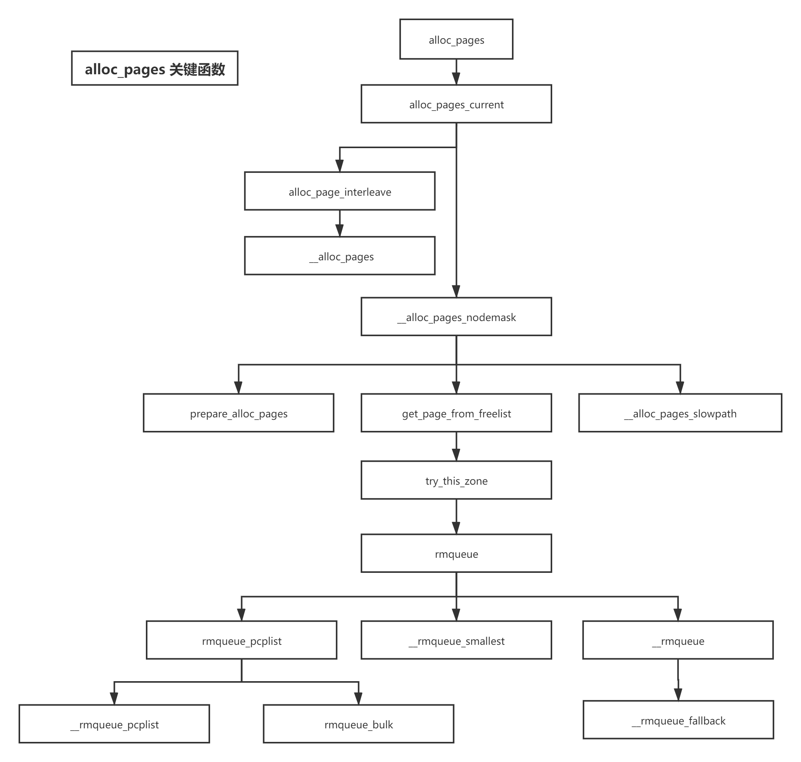
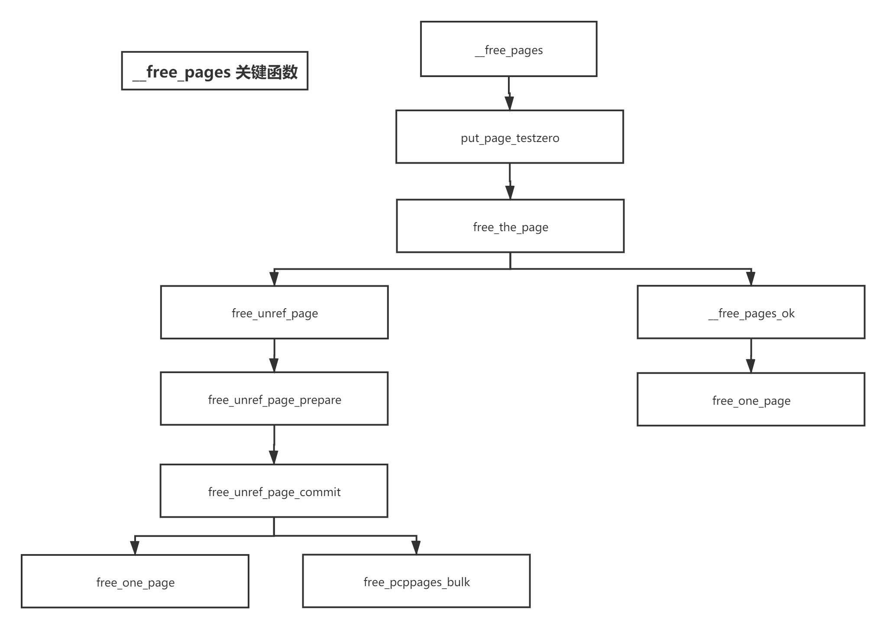
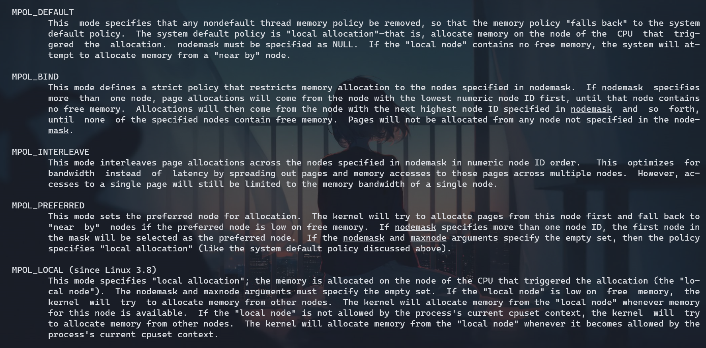
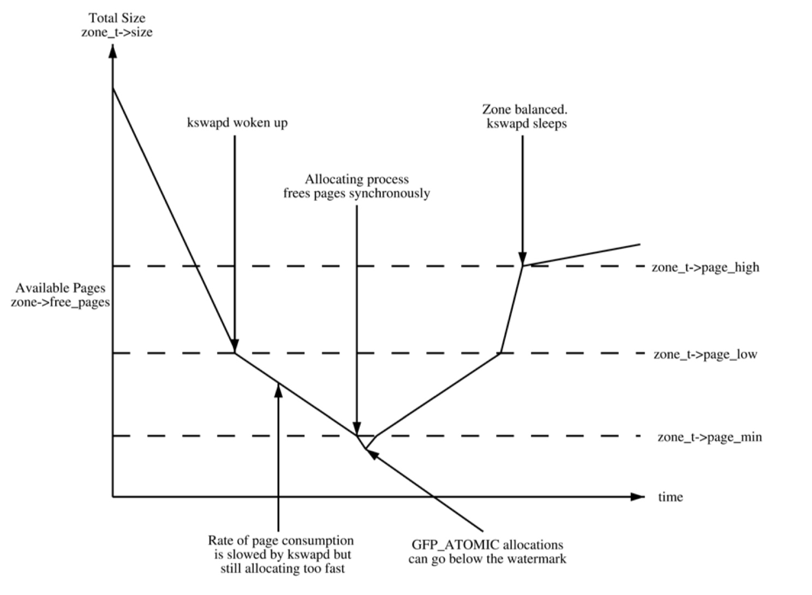
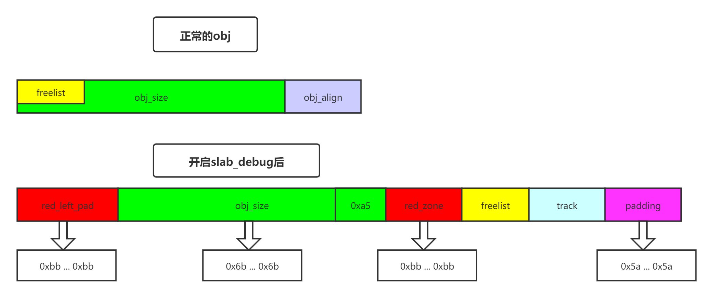
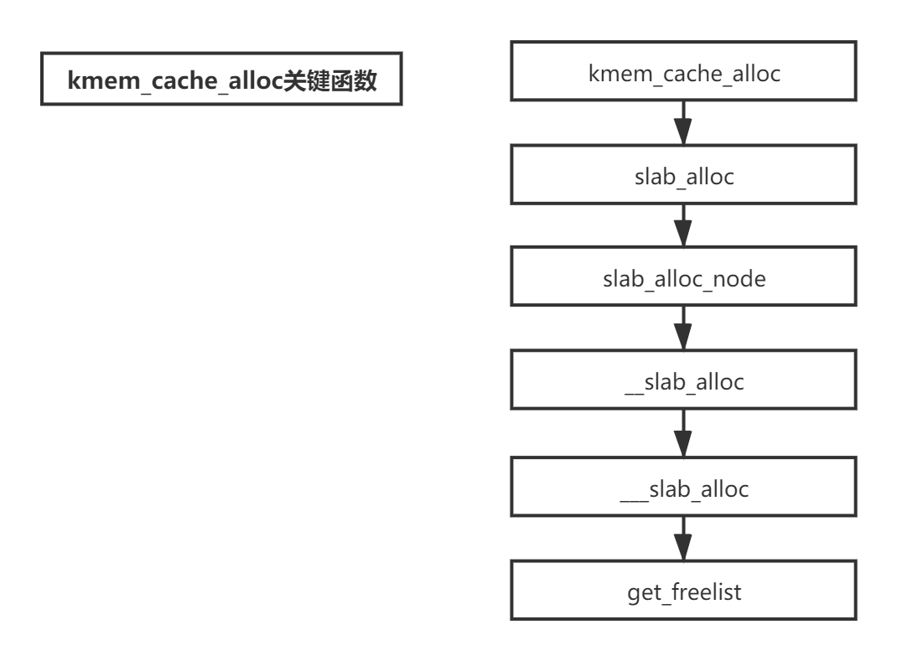
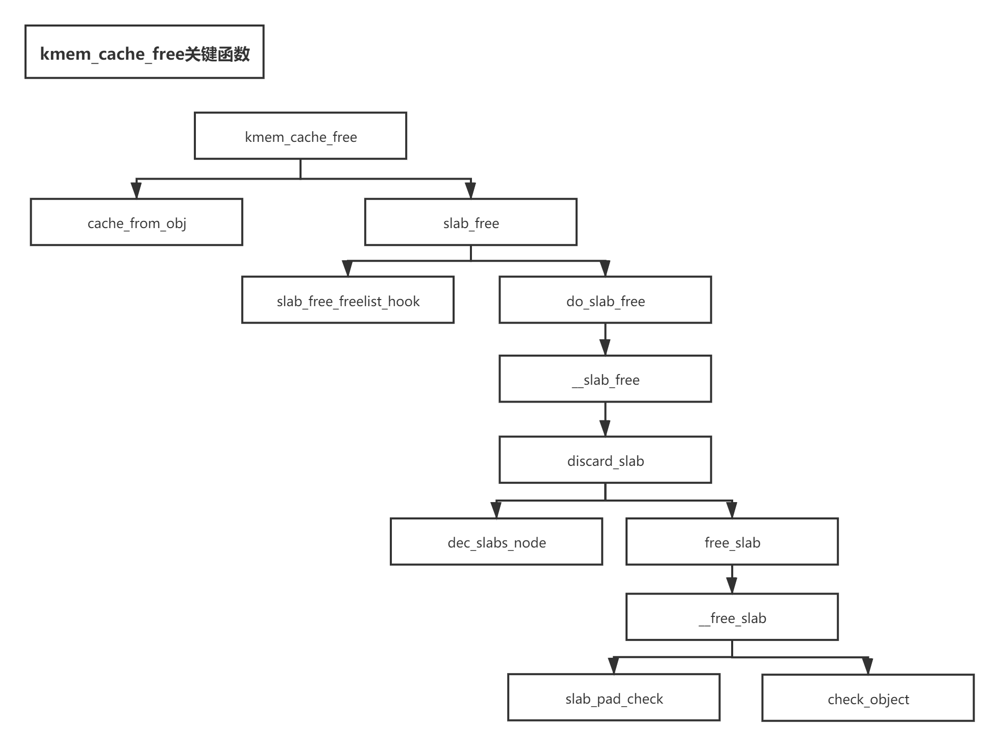
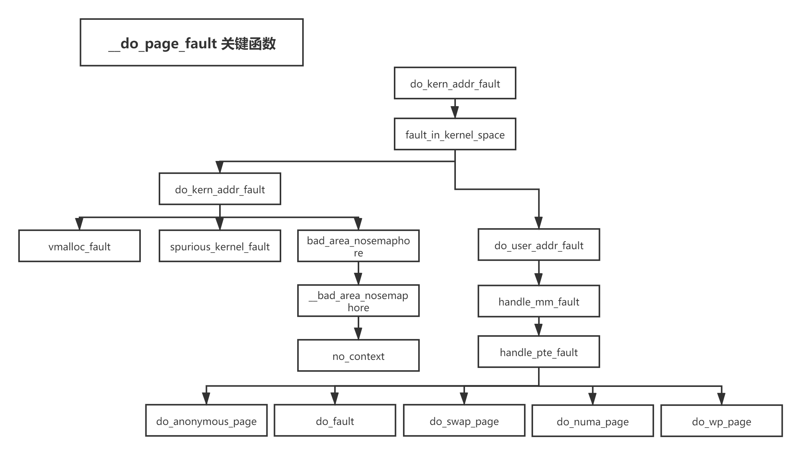

linux内核(5.4.81)---内存管理模块源码分析
-
- 1.1. 页表查询–以x86_64下的4级页表举例(硬件)
- 1.1.1. TLB转换
- 1.1.2. 页表转换
- 1.1.3. 页表结构cache转换
- 1.2. 拓展
- 1.1. 页表查询–以x86_64下的4级页表举例(硬件)
-
- 3.1. alloc_pages_current
- 3.2. __alloc_pages_nodemask
- 3.2.1. get_page_from_freelist
- 3.2.2. _alloc_pages_slowpath
-
- 4.1. free_unref_page
- 4.1.1. free_pcppages_bulk
- 4.2. __free_pages_ok
- 4.2.1. __free_one_page
- 4.1. free_unref_page
-
- 5.1. 结构体解析
-
- 6.1. __slab_alloc
- 6.1.1. get_freelist
- 6.1. __slab_alloc
-
- 7.1. cache_from_obj
- 7.2. slab_free_freelist_hook
- 7.3. do_slab_free
- 7.3.1. __slab_free
-
- 8.1. vm_area_struct 结构体
- 8.2. find_vma(vma查找)
- 8.2.1. vmacache_find
- 8.3. insert_vm_struct(vma插入)
- 8.3.1. find_vma_links
- 8.3.2. 红黑树规则
-
- 9.1. __do_page_fault源码分析
- 9.2. fault_in_kernel_space
- 9.3. do_kern_addr_fault
- 9.3.1. vmalloc_fault
- 9.3.2. spurious_kernel_fault
- 9.3.3. bad_area_nosemaphore
- 9.4. do_user_addr_fault
- 9.4.1. handle_mm_fault
linux作为开源内核，被广泛使用。同时随着用户态安全机制的逐渐完善，攻击成本逐年升高，越来越多的黑客将目光投向linux内核，linux内核安全问题也随之被越来越多的安全研究人员关注。但作为一个规模宏大的开源项目，linux内核安全研究存在非常高的研究门槛，不管是针对特定模块的漏洞挖掘，还是cve复现，对内核的理解限制了绝大多数安全研究人员。而本文则希望通过对内核源码做详细分析来让更多的安全研究人员越过内核门槛。 这篇文章的贡献如下：
（1）硬件层面上分析linux内核页表
（2）从buddy源码分析linux内核页管理
（3）从slub源码分析linux内核小内存管理
（4）从vma源码分析linux内核对于进程内存空间的布局及管理
（5）分析缺页中断流程
（6）从ptmalloc源码分析用户态内存管理机制，以及如何通过特定api与linux内核交互
1. 页表
1.1. 页表查询–以x86_64下的4级页表举例(硬件)
- 流程总览(定义虚拟地址virt_addr, 寻找对应的物理地址phy_addr)
- 顺序: TLB -> 页表结构cache -> 页表(MMU硬件实现)
- MMU = TLB(Translation Lookaside Buffer) + table walk unit
1.1.1. TLB转换
- 明确概念:
VPN(virtual page number), PPN(physical page number),VPO(virtual page offset)和PPO(physical page offset)
- 对于线性地址和物理地址而言, 都是以page为最小的管理单元, 那么也就是说如果线性地址可以映射到某物理地址, 则两者页偏移相同(默认page size = 4K, 占用低12bits), 即VPO = PPO
- TLB可以简单理解成VPN->PPN(36bits), 实现了一个线性映射, 基本结构如下:
___________________ |__VPN1___|__PPN1___| |__VPN2___|__PPN2___| |__VPN3___|__PPN3___| ... ...
- 通过VPN(virt_addr[12:48])定位表项
-
全相连(full associative)– VPN可以被填充在TLB中的任何位置
- 定位VPN对应的表项需要遍历TLB中的所有表项
-
直接匹配– VPN被映射在特定位置
- 如果TLB存在n个表项, 那么VPN%n即为该VPN的索引
- 定位到索引后, 查看VPN是否匹配, 如果不匹配则TLB miss
-
组相连(set-associative)– 全相连和直接匹配相结合
- TLB被划分为m组, 每个组存在n表项, VPN分为set(VPN[47-log2(m):48]), tag(VPN[12:48-log2(m)])
- VPN[47-log2(m):48]%m为该VPN的set索引
- 定位到索引后, 查看set内是否存在tag, 如果不存在则TLB miss
1.1.2. 页表转换
- 明确概念:
- 对于四级页表: PGD(page global directory), PUD(page upper directory), PMD(page middle directory), PTE(page table entry), 每个页表占9bits, 支持48bits虚拟地址
- 对于五级页表：添加P4D表项, 支持57位虚拟地址
- 通过virt_addr[12:48]定位page table entry
- CR3寄存器存储PGD物理地址, virt_addr[39:48]为PGD_index, PGD+PGD_index=PGD_addr
- virt_addr[30:39]为PUD_index, PGD_addr+PUD_index=PUD_addr
- virt_addr[21:30]为PME_index, PUD_addr+PME_index=PME_addr
- virt_addr[12:21]为PTE_index, PME_addr+PTE_index=PTE_addr
- PTE_addr即为page table entry是一个表项映射到PPN
1.1.3. 页表结构cache转换
- 明确概念:
- 如果某些虚拟地址临近, 那么很有可能他们会有相同的页表项(PGD or PUD or PMD or PTE),对于这种情况如果还是依次查询页表就会浪费大量时间, 所以存在页表结构cache, 用来缓存页表
- cache种类:
- PDE cache(virt_addr[21:48]作为tag, 映射PME entry地址)
- PDPTE cache(virt_addr[30:48]作为tag, 映射PUD entry地址)
- PML4 cache(virt_addr[39:48]作为tag, 映射PGD entry地址)
1.2. 拓展
1.2.1. 普通页表cache
- 明确概念:
- 页表保存在内存中, 可以被缓存到普通cache
- 各级页表中存在PCD(page-level cache disable)标志位, 控制下一级页表是否需要被缓存
1.2.2. Huge_Page
- 明确概念:
- 页表中指向下一级的地址是按页对齐的, 也就是低12bits无效, 可以用作flag标志位
- page size flag为1时表示当前页表的下级地址对应大页地址而不是页表
-
x86两级页表支持4MB大页(跳过PTE, 4K*2^10=4MB)
-
x86_64四级页表支持2MB大页(跳过PTE, 4K*2^9=2MB), 1GB大页(跳过PME, 2M*2^9=1GB)
1.2.3. 页表标志位
-
P(Present) - 为1表明该page存在于当前物理内存中, 为0则触发page fault。
-
G(Global)- 标记kernel对应的页, 也存在于TLB entry, 表示该页不会被flush掉。
-
A(Access) - 当page被访问(读/写)过后, 硬件置1。软件可置0, 然后对应的TLB将会被flush掉。
-
D(Dirty)- 对写回的page有作用。当page被写入后, 硬件置1, 表明该page的内容比外部disk/flash对应部分要新, 当系统内存不足, 要将该page回收的时候, 需首先将其内容flush到外部存储, 之后软件将该标志位清0。
-
R/W和U/S属于权限控制类：
-
R/W(Read/Write) - 置1表示该page是writable的, 置0是readonly。
-
U/S(User/Supervisor) - 置0表示只有supervisor(比如操作系统中的kernel)才可访问该page, 置1表示user也可以访问。
- PCD和PWT和cache属性相关：
-
PCD(Page Cache Disabled)- 置1表示disable, 即该page中的内容是不可以被cache的。如果置0(enable), 还要看CR0寄存器中的CD位这个总控开关是否也是0。
-
PWT (Page Write Through)- 置1表示该page对应的cache部分采用write through的方式, 否则采用write back。
- 64位特有:
-
XD (Execute Disable)- 在bit[63]中
-
CR3支持PCID:
- CR4寄存器的PCIDE位 = 1, 则CR3低12位表示PCID(覆盖PCD和PWT–CR3低12bits只有PCD和PWT标志位)
2. 伙伴算法(buddy)
- alloc_pages(内存分配)概略图

- __free_pages(内存释放)缩略图

3. alloc_pages源码分析
- pol变量保存内存分配策略(man set_mempolicy)

- MPOL_DEFAULT: 默认策略, 优先从当前结点分配内存, 若当前结点无空闲内存, 则从最近的有空闲内存的结点分配
- MPOL_BIND: 指定内存分配结点集合, 若该集合内无空闲内存, 则分配失败
- MPOL_INTERLEAVE: 内存分配要覆盖所有结点, 且每个结点使用的内存大小相同, 常用于共享内存区域
- MPOL_PREFERRED: 从指定结点上分配内存, 若该结点无空闲内存, 则从其他结点分配
- MPOL_LOCAL: 同MPOL_DEFAULT
- water_mark

enum zone_watermarks {
WMARK_MIN,
WMARK_LOW,
WMARK_HIGH,
NR_WMARK
};
- WMARK_MIN: 当空闲页面的数量降到WMARK_MIN时, 唤醒 kswapd 守护进程以同步的方式进行直接内存回收, 同时只有GFP_ATOMIC可以在这种情况下分配内存
- WMARK_LOW: 当空闲页面的数量降到WMARK_LOW时, 唤醒 kswapd 守护进程进行内存回收
- WMARK_HIGH: kswapd进程休眠
- 自旋锁(spin_lock)
- 为什么使用自旋锁:
- 使用常规锁会发生上下文切换,时间不可预期,对于一些简单的、极短的临界区来说是一种性能损耗
- 中断上下文是不允许睡眠的,除了自旋锁以外的其他锁都有可能导致睡眠或者进程切换,这是违背了中断的设计初衷,会发生不可预知的错误
- 自旋锁的功能: 一直轮询等待检查临界区是否可用, 直至时间片用完
- 自旋锁使用原则:
- 禁止抢占: 如果A, B同时访问临界区, A进程首先获得自旋锁, B进程轮询等待, B抢占A后, B无法获得自旋锁, 造成死锁
- 禁止睡眠: 如果自旋锁锁住以后进入睡眠,而又不能进行处理器抢占,内核的调取器无法调取其他进程获得该CPU,从而导致该CPU被挂起；同时该进程也无法自唤醒且一直持有该自旋锁,进一步会导致其他使用该自旋锁的位置出现死锁
- 自旋锁的几个实现:
- spin_lock: 只禁止内核抢占, 不会关闭本地中断
- spin_lock_irq: 禁止内核抢占, 且关闭本地中断
- spin_lock_irqsave: 禁止内核抢占, 关闭中断, 保存中断状态寄存器的标志位
- spin_lock与spin_lock_irq的区别:
- 禁止中断与禁止抢占的原因相同
- spin_lock_irq与spin_lock_irqsave的区别:
- 假设临界区被两把spin_lock_irq(a->b)锁定, 当b解锁后(a还在加锁中), 不会保存a加锁后的中断寄存器状态(直接开中断), 也就是锁a在加锁时, 中断被打开, 导致spin_lock_irq在功能上和spin_lock相同, 也就具备了spin_lock的中断隐患
3.1. alloc_pages_current
struct page *alloc_pages_current(gfp_t gfp, unsigned order)
{
// pol变量保存内存分配策略(默认为default_policy)
struct mempolicy *pol = &default_policy;
struct page *page;
// 如果不在中断状态下且未指定在当前结点分配内存时, 使用get_task_policy获得当前进程内存分配策略
if (!in_interrupt() && !(gfp & __GFP_THISNODE))
pol = get_task_policy(current);
// 如果内存分配策略为MPOL_INTERLEAVE, 则进入alloc_page_interleave
if (pol->mode == MPOL_INTERLEAVE)
page = alloc_page_interleave(gfp, order, interleave_nodes(pol));
else
page = __alloc_pages_nodemask(gfp, order,
policy_node(gfp, pol, numa_node_id()),
policy_nodemask(gfp, pol));
return page;
}
3.2. __alloc_pages_nodemask
struct page *
__alloc_pages_nodemask(gfp_t gfp_mask, unsigned int order, int preferred_nid,
nodemask_t *nodemask)
{
struct page *page;
unsigned int alloc_flags = ALLOC_WMARK_LOW;
gfp_t alloc_mask; /* The gfp_t that was actually used for allocation */
struct alloc_context ac = { };
// 如果order大于MAX_ORDER(11), 则内存分配失败
if (unlikely(order >= MAX_ORDER)) {
WARN_ON_ONCE(!(gfp_mask & __GFP_NOWARN));
return NULL;
}
// 添加gfp_allowed_mask标志位
gfp_mask &= gfp_allowed_mask;
alloc_mask = gfp_mask;
// 填充ac参数(用于内存分配), 并做一些检查
if (!prepare_alloc_pages(gfp_mask, order, preferred_nid, nodemask, &ac, &alloc_mask, &alloc_flags))
return NULL;
// 决定是否平衡各个zone中的脏页, 确定zone(相当于对prepare_alloc_pages的补充)
finalise_ac(gfp_mask, &ac);
// 给alloc_flags添加ALLOC_NOFRAGMENT标志位(不使用zone备用迁移类型), 如果遍历完本地zone后仍然无法分配内存则取消该标志位, 该方案是为了减少内存碎片
alloc_flags |= alloc_flags_nofragment(ac.preferred_zoneref->zone, gfp_mask);
// 通过快分配分配内存页
page = get_page_from_freelist(alloc_mask, order, alloc_flags, &ac);
if (likely(page))
goto out;
alloc_mask = current_gfp_context(gfp_mask);
ac.spread_dirty_pages = false;
if (unlikely(ac.nodemask != nodemask))
ac.nodemask = nodemask;
// 通过慢分配分配内存页
page = __alloc_pages_slowpath(alloc_mask, order, &ac);
out:
if (memcg_kmem_enabled() && (gfp_mask & __GFP_ACCOUNT) && page &&
unlikely(__memcg_kmem_charge(page, gfp_mask, order) != 0)) {
__free_pages(page, order);
page = NULL;
}
trace_mm_page_alloc(page, order, alloc_mask, ac.migratetype);
return page;
}
- prepare_alloc_pages
static inline bool prepare_alloc_pages(gfp_t gfp_mask, unsigned int order,
int preferred_nid, nodemask_t *nodemask,
struct alloc_context *ac, gfp_t *alloc_mask,
unsigned int *alloc_flags)
{
// ac填充从gfp_mask获取的内存分配参数
// 获得当前nodemask对应的zone的max_index
ac->high_zoneidx = gfp_zone(gfp_mask);
// 获得node对应的zone_list
ac->zonelist = node_zonelist(preferred_nid, gfp_mask);
ac->nodemask = nodemask;
// 选择迁移类型
ac->migratetype = gfpflags_to_migratetype(gfp_mask);
// 判断是否存在cpuset机制
if (cpusets_enabled()) {
*alloc_mask |= __GFP_HARDWALL;
if (!ac->nodemask)
ac->nodemask = &cpuset_current_mems_allowed;
else
*alloc_flags |= ALLOC_CPUSET;
}
// 函数未实现
fs_reclaim_acquire(gfp_mask);
fs_reclaim_release(gfp_mask);
// 如果内存紧张可能会休眠
might_sleep_if(gfp_mask & __GFP_DIRECT_RECLAIM);
// 对gfp_mask, ord做检查(默认没有开启CONFIG_FAIL_PAGE_ALLOC的情况下, 直接return false)
if (should_fail_alloc_page(gfp_mask, order))
return false;
// 匹配CMA机制
if (IS_ENABLED(CONFIG_CMA) && ac->migratetype == MIGRATE_MOVABLE)
*alloc_flags |= ALLOC_CMA;
return true;
}
- finalise_ac
static inline void finalise_ac(gfp_t gfp_mask, struct alloc_context *ac)
{
/* Dirty zone balancing only done in the fast path */
ac->spread_dirty_pages = (gfp_mask & __GFP_WRITE);
// 从zone_list头部开始寻找匹配nodemask的zoneref
ac->preferred_zoneref = first_zones_zonelist(ac->zonelist,
ac->high_zoneidx, ac->nodemask);
}
3.2.1. get_page_from_freelist
static struct page *
get_page_from_freelist(gfp_t gfp_mask, unsigned int order, int alloc_flags,
const struct alloc_context *ac)
{
struct zoneref *z;
struct zone *zone;
struct pglist_data *last_pgdat_dirty_limit = NULL;
bool no_fallback;
retry:
/*
* Scan zonelist, looking for a zone with enough free.
*/
// ALLOC_NOFRAGMENT标志位由alloc_flags_nofragment()函数设置
// no_fallback: node->node_zonelists[]包含本node的zones以及备用zones, 设置fallback后可使用备用zones
no_fallback = alloc_flags & ALLOC_NOFRAGMENT;
z = ac->preferred_zoneref;
// 遍历zone
for_next_zone_zonelist_nodemask(zone, z, ac->zonelist, ac->high_zoneidx,
ac->nodemask) {
struct page *page;
unsigned long mark;
// 判断cpuset是否开启且当前CPU是否允许在内存域zone所在结点中分配内存
if (cpusets_enabled() &&
(alloc_flags & ALLOC_CPUSET) &&
!__cpuset_zone_allowed(zone, gfp_mask))
continue;
// ac->spread_dirty_pages不为0表示gfp_mask存在__GFP_WRITE标志位, 有可能增加脏页
if (ac->spread_dirty_pages) {
if (last_pgdat_dirty_limit == zone->zone_pgdat)
continue;
// 如果zone对应的node脏页超标则使用last_pgdat_dirty_limit标识, 并跳过该zone
if (!node_dirty_ok(zone->zone_pgdat)) {
last_pgdat_dirty_limit = zone->zone_pgdat;
continue;
}
}
// 如果设置no_fallback且当前zone并非preferred_zone, 则索引zone->node, 如果该node并非preferred_zone->node, 则取消ALLOC_NOFRAGMENT标志位即设置fallback(因为相比于内存碎片, 内存局部性更重要)
if (no_fallback && nr_online_nodes > 1 &&
zone != ac->preferred_zoneref->zone) {
int local_nid;
local_nid = zone_to_nid(ac->preferred_zoneref->zone);
if (zone_to_nid(zone) != local_nid) {
alloc_flags &= ~ALLOC_NOFRAGMENT;
goto retry;
}
}
// 获取该zone的水准, 并检查该zone的水位是否水准之上
mark = wmark_pages(zone, alloc_flags & ALLOC_WMARK_MASK);
if (!zone_watermark_fast(zone, order, mark,
ac_classzone_idx(ac), alloc_flags,
gfp_mask)) {
int ret;
// 如果存在ALLOC_NO_WATERMARKS标志位则忽略水位, 进入try_this_zone
if (alloc_flags & ALLOC_NO_WATERMARKS)
goto try_this_zone;
/*
static bool zone_allows_reclaim(struct zone *local_zone, struct zone *zone)
{
return node_distance(zone_to_nid(local_zone), zone_to_nid(zone)) <=
node_reclaim_distance;
}
*/
// 如果系统不允许回收内存或者preferred->zone与当前zone的node_distance大于node_reclaim_distance(默认30), 则更换zone
if (node_reclaim_mode == 0 ||
!zone_allows_reclaim(ac->preferred_zoneref->zone, zone))
continue;
// 内存回收
ret = node_reclaim(zone->zone_pgdat, gfp_mask, order);
switch (ret) {
case NODE_RECLAIM_NOSCAN:
/* did not scan */
continue;
case NODE_RECLAIM_FULL:
/* scanned but unreclaimable */
continue;
default:
// 内存回收后, 水位正常
if (zone_watermark_ok(zone, order, mark,
ac_classzone_idx(ac), alloc_flags))
goto try_this_zone;
continue;
}
}
try_this_zone:
// 伙伴算法开始分配页内存
page = rmqueue(ac->preferred_zoneref->zone, zone, order,
gfp_mask, alloc_flags, ac->migratetype);
if (page) {
prep_new_page(page, order, gfp_mask, alloc_flags);
if (unlikely(order && (alloc_flags & ALLOC_HARDER)))
reserve_highatomic_pageblock(page, zone, order);
return page;
} else {
}
rmqueue
static inline
struct page *rmqueue(struct zone *preferred_zone,
struct zone *zone, unsigned int order,
gfp_t gfp_flags, unsigned int alloc_flags,
int migratetype)
{
unsigned long flags;
struct page *page;
//如果分配单页, 则进入rmqueue_pcplist
if (likely(order == 0)) {
page = rmqueue_pcplist(preferred_zone, zone, gfp_flags,
migratetype, alloc_flags);
goto out;
}
// 不能使用__GFP_NOFAIL, 分配order>1的页
WARN_ON_ONCE((gfp_flags & __GFP_NOFAIL) && (order > 1));
// 使用自旋锁加锁zone资源
spin_lock_irqsave(&zone->lock, flags);
do {
page = NULL;
// ALLOC_HARDER表示高优先级分配, 进入__rmqueue_smallest
if (alloc_flags & ALLOC_HARDER) {
page = __rmqueue_smallest(zone, order, MIGRATE_HIGHATOMIC);
if (page)
// 用于debug的插桩设计
trace_mm_page_alloc_zone_locked(page, order, migratetype);
}
// 不满足上诉条件或page未分配成功, 进入__rmqueue
if (!page)
page = __rmqueue(zone, order, migratetype, alloc_flags);
} while (page && check_new_pages(page, order));
// check_new_pages遍历page_block中的struct page, 检查page成员, 如果出错则打印错误原因
spin_unlock(&zone->lock);
if (!page)
goto failed;
// page_block被分配后更新zone成员信息
__mod_zone_freepage_state(zone, -(1 << order),
get_pcppage_migratetype(page));
__count_zid_vm_events(PGALLOC, page_zonenum(page), 1 << order);
// 如果系统是NUMA架构, 则更新NUMA hit/miss 数据
zone_statistics(preferred_zone, zone);
// 恢复中断信息
local_irq_restore(flags);
out:
/* Separate test+clear to avoid unnecessary atomics */
if (test_bit(ZONE_BOOSTED_WATERMARK, &zone->flags)) {
clear_bit(ZONE_BOOSTED_WATERMARK, &zone->flags);
wakeup_kswapd(zone, 0, 0, zone_idx(zone));
}
// 编译阶段的变量类型检查
VM_BUG_ON_PAGE(page && bad_range(zone, page), page);
return page;
failed:
local_irq_restore(flags);
return NULL;
}
rmqueue_pcplis
static struct page *rmqueue_pcplist(struct zone *preferred_zone,
struct zone *zone, gfp_t gfp_flags,
int migratetype, unsigned int alloc_flags)
{
struct per_cpu_pages *pcp;
struct list_head *list;
struct page *page;
unsigned long flags;
// 禁用全部中断, 并将当前中断状态保存至flags
local_irq_save(flags);
// 获得当前cpu的pcp结构体(热页)
pcp = &this_cpu_ptr(zone->pageset)->pcp;
// 根据迁移类型选择热页链表
list = &pcp->lists[migratetype];
// 在list中分配内存页
page = __rmqueue_pcplist(zone, migratetype, alloc_flags, pcp, list);
if (page) {
__count_zid_vm_events(PGALLOC, page_zonenum(page), 1);
// Update NUMA hit/miss statistics
zone_statistics(preferred_zone, zone);
}
// 恢复中断状态并开中断
local_irq_restore(flags);
return page;
}
- __rmqueue_pcplist
static struct page *__rmqueue_pcplist(struct zone *zone, int migratetype,
unsigned int alloc_flags,
struct per_cpu_pages *pcp,
struct list_head *list)
{
struct page *page;
do {
// 如果列表为空, 则使用rmqueue_bulk装载内存页进入列表
if (list_empty(list)) {
pcp->count += rmqueue_bulk(zone, 0,
pcp->batch, list,
migratetype, alloc_flags);
if (unlikely(list_empty(list)))
return NULL;
}
// 获得lru列表首部页结点
page = list_first_entry(list, struct page, lru);
// 将页结点从page->lru列表删除
list_del(&page->lru);
// 空闲page计数器-1
pcp->count--;
// 对page做安全检查
} while (check_new_pcp(page));
return page;
}
- rmqueue_bulk
static int rmqueue_bulk(struct zone *zone, unsigned int order,
unsigned long count, struct list_head *list,
int migratetype, unsigned int alloc_flags)
{
int i, alloced = 0;
// 对zone资源加锁
spin_lock(&zone->lock);
for (i = 0; i < count; ++i) {
// 从zone中取出page放入pcp热页缓存列表, 直至pcp被填满
struct page *page = __rmqueue(zone, order, migratetype,
alloc_flags);
if (unlikely(page == NULL))
break;
// check_pcp_refill封装check_new_page
if (unlikely(check_pcp_refill(page)))
continue;
// 添加page至list->lru
list_add_tail(&page->lru, list);
alloced++;
// 如果page位于cma中, 则更新NR_FREE_CMA_PAGES
if (is_migrate_cma(get_pcppage_migratetype(page)))
__mod_zone_page_state(zone, NR_FREE_CMA_PAGES,
-(1 << order));
}
// 从zone摘取page_block过程循环了i次, 每个page_block包含2^i个page, NR_FREE_PAGES-i << order, 更新NR_FREE_PAGES
__mod_zone_page_state(zone, NR_FREE_PAGES, -(i << order));
// 解锁
spin_unlock(&zone->lock);
return alloced;
}
__rmqueue_smallest
static __always_inline
struct page *__rmqueue_smallest(struct zone *zone, unsigned int order,
int migratetype)
{
unsigned int current_order;
struct free_area *area;
struct page *page;
// 从指定order到MAX_ORDER遍历zone->free_area[]
for (current_order = order; current_order < MAX_ORDER; ++current_order) {
area = &(zone->free_area[current_order]);
// 从zone->free_area[][migratetype]->lru链表头部获得page()
page = get_page_from_free_area(area, migratetype);
if (!page)
continue;
// 从zone->free_area[][migratetype]->lru中删除page, 更新zone成员
del_page_from_free_area(page, area);
// 将current_order阶的page_block拆成小块,并将小块放到对应的阶的链表中去
expand(zone, page, order, current_order, area, migratetype);
// 设置page迁移类型
set_pcppage_migratetype(page, migratetype);
return page;
}
return NULL;
}
__rmqueue
static __always_inline struct page *
__rmqueue(struct zone *zone, unsigned int order, int migratetype,
unsigned int alloc_flags)
{
struct page *page;
retry:
// 使用__rmqueue_smallest获得page
page = __rmqueue_smallest(zone, order, migratetype);
if (unlikely(!page)) {
// page分配失败后, 如果迁移类型是MIGRATE_MOVABLE, 进入__rmqueue_cma_fallback
if (migratetype == MIGRATE_MOVABLE)
page = __rmqueue_cma_fallback(zone, order);
// page分配再次失败后使用判断是否可以使用备用迁移类型(如果可以则修改order, migratetype)然后跳转进入retry
if (!page && __rmqueue_fallback(zone, order, migratetype,
alloc_flags))
goto retry;
}
trace_mm_page_alloc_zone_locked(page, order, migratetype);
return page;
}
- __rmqueue_fallback
- 备用迁移类型
static int fallbacks[MIGRATE_TYPES][4] = {
[MIGRATE_UNMOVABLE] = { MIGRATE_RECLAIMABLE, MIGRATE_MOVABLE, MIGRATE_TYPES },
[MIGRATE_MOVABLE] = { MIGRATE_RECLAIMABLE, MIGRATE_UNMOVABLE, MIGRATE_TYPES },
[MIGRATE_RECLAIMABLE] = { MIGRATE_UNMOVABLE, MIGRATE_MOVABLE, MIGRATE_TYPES },
#ifdef CONFIG_CMA
#endif
#ifdef CONFIG_MEMORY_ISOLATION
#endif
};
- __rmqueue_fallback
static __always_inline bool
__rmqueue_fallback(struct zone *zone, int order, int start_migratetype,
unsigned int alloc_flags)
{
struct free_area *area;
int current_order;
int min_order = order;
struct page *page;
int fallback_mt;
bool can_steal;
// 如果设置alloc_flags为ALLOC_NOFRAGMENT(内存碎片优化), min_order=pageblock_order(MAX_ORDER-1)---尽可能分配大页
if (alloc_flags & ALLOC_NOFRAGMENT)
min_order = pageblock_order;
// 遍历zone->free_area[order](order=MAX_ORDER-1~min_order)
for (current_order = MAX_ORDER - 1; current_order >= min_order;
--current_order) {
area = &(zone->free_area[current_order]);
// 查找可以盗取的迁移类型
fallback_mt = find_suitable_fallback(area, current_order,
start_migratetype, false, &can_steal);
if (fallback_mt == -1)
continue;
// 如果can_steal=0且迁移类型为MIGRATE_MOVABLE, 当前所在的order大于需求order, 跳转进入find_smallest
// 这里的can_steal=0并不表示不能盗取, 只是对于迁移类型为MIGRATE_MOVABLE的内存分配需求有更好的解决方法(窃取和拆分最小的可用页块而不是最大的可用页块)所以单独列出
if (!can_steal && start_migratetype == MIGRATE_MOVABLE
&& current_order > order)
goto find_smallest;
goto do_steal;
}
return false;
find_smallest:
// 从最小的order开始遍历
for (current_order = order; current_order < MAX_ORDER;
current_order++) {
area = &(zone->free_area[current_order]);
fallback_mt = find_suitable_fallback(area, current_order,
start_migratetype, false, &can_steal);
if (fallback_mt != -1)
break;
}
VM_BUG_ON(current_order == MAX_ORDER);
do_steal:
// 获得备用迁移类型对应的page_block
page = get_page_from_free_area(area, fallback_mt);
// 判断直接盗取(改变page_block的迁移类型), 还是借用(分配但不改变页块迁移类型)
steal_suitable_fallback(zone, page, alloc_flags, start_migratetype,
can_steal);
trace_mm_page_alloc_extfrag(page, order, current_order,
start_migratetype, fallback_mt);
return true;
}
- find_suitable_fallback
int find_suitable_fallback(struct free_area *area, unsigned int order,
int migratetype, bool only_stealable, bool *can_steal)
{
int i;
int fallback_mt;
// 判断该order内存链表是否为空
if (area->nr_free == 0)
return -1;
*can_steal = false;
for (i = 0;; i++) {
// 遍历备用迁移类型
fallback_mt = fallbacks[migratetype][i];
// MIGRATE_TYPES表示不可用, 退出
if (fallback_mt == MIGRATE_TYPES)
break;
// 如果area->free_list[fallback_mt]为空, 遍历下一个备用迁移类型
if (free_area_empty(area, fallback_mt))
continue;
// 判断是否可盗取
if (can_steal_fallback(order, migratetype))
*can_steal = true;
if (!only_stealable)
return fallback_mt;
if (*can_steal)
return fallback_mt;
}
return -1;
}
- can_steal_fallback
static bool can_steal_fallback(unsigned int order, int start_mt)
{
// 判断order是否大于等于MAX_ORDER-1
if (order >= pageblock_order)
return true;
// 如果order>=(MAX_ORDER-1)/2 或者 迁移类型为MIGRATE_RECLAIMABLE, MIGRATE_UNMOVABLE 或者 page_group_by_mobility_disabled=1(gdb动调发现默认为0) 则表示可以盗取
if (order >= pageblock_order / 2 ||
start_mt == MIGRATE_RECLAIMABLE ||
start_mt == MIGRATE_UNMOVABLE ||
page_group_by_mobility_disabled)
return true;
return false;
}
3.2.2. _alloc_pages_slowpath
static inline struct page *
__alloc_pages_slowpath(gfp_t gfp_mask, unsigned int order,
struct alloc_context *ac)
{
bool can_direct_reclaim = gfp_mask & __GFP_DIRECT_RECLAIM;
// PAGE_ALLOC_COSTLY_ORDER=3
const bool costly_order = order > PAGE_ALLOC_COSTLY_ORDER;
struct page *page = NULL;
unsigned int alloc_flags;
unsigned long did_some_progress;
enum compact_priority compact_priority;
enum compact_result compact_result;
int compaction_retries;
int no_progress_loops;
unsigned int cpuset_mems_cookie;
int reserve_flags;
// 如果内存分配标志包含__GFP_ATOMIC(来自不能阻塞或延迟和失败没有回调的原子上下文的请求), __GFP_DIRECT_RECLAIM(可以直接回收, 表示有回收需要时会阻塞请求), 明显二者冲突, 此处做一个校验
if (WARN_ON_ONCE((gfp_mask & (__GFP_ATOMIC|__GFP_DIRECT_RECLAIM)) ==
(__GFP_ATOMIC|__GFP_DIRECT_RECLAIM)))
gfp_mask &= ~__GFP_ATOMIC;
retry_cpuset:
compaction_retries = 0;
no_progress_loops = 0;
compact_priority = DEF_COMPACT_PRIORITY;
cpuset_mems_cookie = read_mems_allowed_begin();
// 降低要求, 重新构建标志位
alloc_flags = gfp_to_alloc_flags(gfp_mask);
ac->preferred_zoneref = first_zones_zonelist(ac->zonelist,
ac->high_zoneidx, ac->nodemask);
if (!ac->preferred_zoneref->zone)
goto nopage;
// 如果设置了ALLOC_KSWAPD, 则唤醒交换进程
if (alloc_flags & ALLOC_KSWAPD)
wake_all_kswapds(order, gfp_mask, ac);
// 内存调整后再次分配
page = get_page_from_freelist(gfp_mask, order, alloc_flags, ac);
if (page)
goto got_pg;
// 如果满足以下条件则尝试进行内存压缩
// 1. 如果标识__GFP_DIRECT_RECLAIM&ALLOC_NO_WATERMARK且order>3(costly_order=1)则进入__alloc_pages_direct_compact
// 2. 如果标识__GFP_DIRECT_RECLAIM&ALLOC_NO_WATERMARK且order<3(costly_order=0)且迁移类型不为MIGRATE_MOVABLE则进入__alloc_pages_direct_compact
if (can_direct_reclaim &&
(costly_order ||
(order > 0 && ac->migratetype != MIGRATE_MOVABLE))
&& !gfp_pfmemalloc_allowed(gfp_mask)) {
page = __alloc_pages_direct_compact(gfp_mask, order,
alloc_flags, ac,
INIT_COMPACT_PRIORITY,
&compact_result);
if (page)
goto got_pg;
// 设置压缩参数, 后面会专门讲解这部分
if (order >= pageblock_order && (gfp_mask & __GFP_IO) &&
!(gfp_mask & __GFP_RETRY_MAYFAIL)) {
if (compact_result == COMPACT_SKIPPED ||
compact_result == COMPACT_DEFERRED)
goto nopage;
}
if (costly_order && (gfp_mask & __GFP_NORETRY)) {
if (compact_result == COMPACT_DEFERRED)
goto nopage;
compact_priority = INIT_COMPACT_PRIORITY;
}
}
retry:
// 再次唤醒交换进程
if (alloc_flags & ALLOC_KSWAPD)
wake_all_kswapds(order, gfp_mask, ac);
reserve_flags = __gfp_pfmemalloc_flags(gfp_mask);
if (reserve_flags)
alloc_flags = reserve_flags;
// 如果cpu不允许在zone所在node中分配内存且可以进行no_water_mark分配则通过ac->nodemask = NULL降低内存分配标准, 再次分配
if (!(alloc_flags & ALLOC_CPUSET) || reserve_flags) {
ac->nodemask = NULL;
ac->preferred_zoneref = first_zones_zonelist(ac->zonelist,
ac->high_zoneidx, ac->nodemask);
}
page = get_page_from_freelist(gfp_mask, order, alloc_flags, ac);
if (page)
goto got_pg;
if (!can_direct_reclaim)
goto nopage;
if (current->flags & PF_MEMALLOC)
goto nopage;
// 内存回收后分配内存
page = __alloc_pages_direct_reclaim(gfp_mask, order, alloc_flags, ac,
&did_some_progress);
if (page)
goto got_pg;
// 内存压缩后分配内存
page = __alloc_pages_direct_compact(gfp_mask, order, alloc_flags, ac,
compact_priority, &compact_result);
if (page)
goto got_pg;
if (gfp_mask & __GFP_NORETRY)
goto nopage;
if (costly_order && !(gfp_mask & __GFP_RETRY_MAYFAIL))
goto nopage;
// 分析是否应该再次内存回收
if (should_reclaim_retry(gfp_mask, order, ac, alloc_flags,
did_some_progress > 0, &no_progress_loops))
goto retry;
// 分析是否应该再次内存压缩
if (did_some_progress > 0 &&
should_compact_retry(ac, order, alloc_flags,
compact_result, &compact_priority,
&compaction_retries))
goto retry;
if (check_retry_cpuset(cpuset_mems_cookie, ac))
goto retry_cpuset;
// 杀死一些进程以获得内存
page = __alloc_pages_may_oom(gfp_mask, order, ac, &did_some_progress);
if (page)
goto got_pg;
if (tsk_is_oom_victim(current) &&
(alloc_flags == ALLOC_OOM ||
(gfp_mask & __GFP_NOMEMALLOC)))
goto nopage;
if (did_some_progress) {
no_progress_loops = 0;
goto retry;
}
nopage:
if (check_retry_cpuset(cpuset_mems_cookie, ac))
goto retry_cpuset;
if (gfp_mask & __GFP_NOFAIL) {
if (WARN_ON_ONCE(!can_direct_reclaim))
goto fail;
WARN_ON_ONCE(current->flags & PF_MEMALLOC);
WARN_ON_ONCE(order > PAGE_ALLOC_COSTLY_ORDER);
// 使用ALLOC_HARDER标志进行内存分配
page = __alloc_pages_cpuset_fallback(gfp_mask, order, ALLOC_HARDER, ac);
if (page)
goto got_pg;
cond_resched();
goto retry;
}
fail:
warn_alloc(gfp_mask, ac->nodemask,
"page allocation failure: order:%u", order);
got_pg:
return page;
}
4. _free_pages源码分析
void __free_pages(struct page *page, unsigned int order)
{
// 检查并更新(-1)page->_refcount, 当page->_refcount=0时, return true
if (put_page_testzero(page))
// 如果order=0 --> free_unref_page
// 如果order>0 --> __free_pages_ok
free_the_page(page, order);
}
4.1. free_unref_page
- free_unref_page -> free_unref_page_commit
static void free_unref_page_commit(struct page *page, unsigned long pfn)
{
struct zone *zone = page_zone(page);
struct per_cpu_pages *pcp;
int migratetype;
// 获得迁移类型
migratetype = get_pcppage_migratetype(page);
__count_vm_event(PGFREE);
// pcp_list 只放置unmovable, reclaimable, movable类型page
// 大于等于MIGRATE_PCPTYPES的迁移类型中MIGRATE_ISOLATE不能被放入pcp
if (migratetype >= MIGRATE_PCPTYPES) {
if (unlikely(is_migrate_isolate(migratetype))) {
// 放入伙伴系统
free_one_page(zone, page, pfn, 0, migratetype);
return;
}
migratetype = MIGRATE_MOVABLE;
}
pcp = &this_cpu_ptr(zone->pageset)->pcp;
// 将page放入pcp->lists[migratetype]链表表头
list_add(&page->lru, &pcp->lists[migratetype]);
pcp->count++;
// 如果pcp->count(pcp中页数目) >= pcp->high(pcp中最大页数目), 则将多余的page放入伙伴系统
if (pcp->count >= pcp->high) {
unsigned long batch = READ_ONCE(pcp->batch);
free_pcppages_bulk(zone, batch, pcp);
}
}
4.1.1. free_pcppages_bulk
static void free_pcppages_bulk(struct zone *zone, int count,
struct per_cpu_pages *pcp)
{
int migratetype = 0;
int batch_free = 0;
int prefetch_nr = 0;
bool isolated_pageblocks;
struct page *page, *tmp;
LIST_HEAD(head);
count = min(pcp->count, count);
// 通过循环遍历迁移类型列表, 依次递增删除页数(batch_free)
while (count) {
struct list_head *list;
do {
batch_free++;
// 循环查询pcp->lists[migratetype]
if (++migratetype == MIGRATE_PCPTYPES)
migratetype = 0;
list = &pcp->lists[migratetype];
} while (list_empty(list));
// 只有一个迁移类型非空, 在这里释放全部count
if (batch_free == MIGRATE_PCPTYPES)
batch_free = count;
do {
// 从列表尾部获得page
page = list_last_entry(list, struct page, lru);
list_del(&page->lru);
pcp->count--;
if (bulkfree_pcp_prepare(page))
continue;
// 将取出的page全部放入以head为头的链表中
list_add_tail(&page->lru, &head);
// 数据预取可以加快速度
if (prefetch_nr++ < pcp->batch)
prefetch_buddy(page);
} while (--count && --batch_free && !list_empty(list));
}
spin_lock(&zone->lock);
isolated_pageblocks = has_isolate_pageblock(zone);
list_for_each_entry_safe(page, tmp, &head, lru) {
// 获得迁移类型
int mt = get_pcppage_migratetype(page);
// 迁移类型不能是isolated
VM_BUG_ON_PAGE(is_migrate_isolate(mt), page);
if (unlikely(isolated_pageblocks))
mt = get_pageblock_migratetype(page);
// 释放page进入伙伴算法
__free_one_page(page, page_to_pfn(page), zone, 0, mt);
trace_mm_page_pcpu_drain(page, 0, mt);
}
spin_unlock(&zone->lock);
}
4.2. __free_pages_ok
- __free_pages_ok -> free_one_page
static void free_one_page(struct zone *zone,
struct page *page, unsigned long pfn,
unsigned int order,
int migratetype)
{
spin_lock(&zone->lock);
// 判断zone是否存在isolate迁移类型, page是否是isolate迁移类型(一般没有这个配置)
if (unlikely(has_isolate_pageblock(zone) ||
is_migrate_isolate(migratetype))) {
migratetype = get_pfnblock_migratetype(page, pfn);
}
__free_one_page(page, pfn, zone, order, migratetype);
spin_unlock(&zone->lock);
}
4.2.1. __free_one_page
static inline void __free_one_page(struct page *page,
unsigned long pfn,
struct zone *zone, unsigned int order,
int migratetype)
{
unsigned long combined_pfn;
unsigned long uninitialized_var(buddy_pfn);
struct page *buddy;
unsigned int max_order;
struct capture_control *capc = task_capc(zone);
max_order = min_t(unsigned int, MAX_ORDER, pageblock_order + 1);
VM_BUG_ON(!zone_is_initialized(zone));
VM_BUG_ON_PAGE(page->flags & PAGE_FLAGS_CHECK_AT_PREP, page);
VM_BUG_ON(migratetype == -1);
if (likely(!is_migrate_isolate(migratetype)))
// 更新zone状态
__mod_zone_freepage_state(zone, 1 << order, migratetype);
VM_BUG_ON_PAGE(pfn & ((1 << order) - 1), page);
VM_BUG_ON_PAGE(bad_range(zone, page), page);
continue_merging:
// 循环遍历直到order = max_order - 1
while (order < max_order - 1) {
if (compaction_capture(capc, page, order, migratetype)) {
__mod_zone_freepage_state(zone, -(1 << order),
migratetype);
return;
}
// buddy_pfn = page_pfn ^ (1 << order);
// 定位兄弟页
buddy_pfn = __find_buddy_pfn(pfn, order);
// 获得兄弟页的struct page
buddy = page + (buddy_pfn - pfn);
// 判断buddy_pfn是否有效
if (!pfn_valid_within(buddy_pfn))
goto done_merging;
// 1. buddy_ord == order
// 2. buddy_zone == zone
// 3. buddy->_refcount == 0
// 若满足以上条件则buddy可合并
if (!page_is_buddy(page, buddy, order))
goto done_merging;
// it is CONFIG_DEBUG_PAGEALLOC guard page
if (page_is_guard(buddy))
clear_page_guard(zone, buddy, order, migratetype);
else
// 将buddy从对应free_area[order]中删除
del_page_from_free_area(buddy, &zone->free_area[order]);
// 设置合并页的struct page以及pfn
combined_pfn = buddy_pfn & pfn;
page = page + (combined_pfn - pfn);
pfn = combined_pfn;
order++;
}
if (max_order < MAX_ORDER) {
/* If we are here, it means order is >= pageblock_order.
* We want to prevent merge between freepages on isolate
* pageblock and normal pageblock. Without this, pageblock
* isolation could cause incorrect freepage or CMA accounting.
*
* We don't want to hit this code for the more frequent
* low-order merging.
*/
if (unlikely(has_isolate_pageblock(zone))) {
int buddy_mt;
buddy_pfn = __find_buddy_pfn(pfn, order);
buddy = page + (buddy_pfn - pfn);
buddy_mt = get_pageblock_migratetype(buddy);
if (migratetype != buddy_mt
&& (is_migrate_isolate(migratetype) ||
is_migrate_isolate(buddy_mt)))
goto done_merging;
}
max_order++;
goto continue_merging;
}
done_merging:
// 设置page的阶数, 将page标记为伙伴系统页
set_page_order(page, order);
// 如果page并不是最大的page, 检查伙伴页是否是free状态的, 如果是, 但是上述步骤合并失败则有可能伙伴页正在被释放, 这时候应该把page放在zone->free_area[order]尾部(延缓page被分配出去), 这样等伙伴页释放完成后就可以一起被合并成更大的page了
if ((order < MAX_ORDER-2) && pfn_valid_within(buddy_pfn)
&& !is_shuffle_order(order)) {
struct page *higher_page, *higher_buddy;
combined_pfn = buddy_pfn & pfn;
higher_page = page + (combined_pfn - pfn);
buddy_pfn = __find_buddy_pfn(combined_pfn, order + 1);
higher_buddy = higher_page + (buddy_pfn - combined_pfn);
if (pfn_valid_within(buddy_pfn) &&
page_is_buddy(higher_page, higher_buddy, order + 1)) {
// 把page置入zone->free_area[order]链表尾部
add_to_free_area_tail(page, &zone->free_area[order],
migratetype);
return;
}
}
if (is_shuffle_order(order))
// 获得随机数, 随机决定放在头还是尾???
add_to_free_area_random(page, &zone->free_area[order],
migratetype);
else
// 把page置入zone->free_area[order]链表头部
add_to_free_area(page, &zone->free_area[order], migratetype);
}
5. slub算法
- slab_debug 下的object:
- kmem_cache缓冲区建立后, 所有内存空间用POISON_INUSE(0X5a)填充
- object被释放后用POISON_FREE(0X6b)填充
- read_left_pad, red_zone用特殊字节填充, 用作magic_num

- kmem_cache_alloc概略图

- kmem_cache_free概略图

5.1. 结构体解析
- kmem_cache结构体
struct kmem_cache {
struct kmem_cache_cpu __percpu *cpu_slab; // per cpu变量, cpu本地内存缓存池, 存储slab
slab_flags_t flags; // object分配掩码
unsigned long min_partial; // kmem_cache_node中的partial链表slab的数量上限, 超过限度多余的slab会被释放
unsigned int size; // 被分配的object真实大小
unsigned int object_size; // 用户申请的obj_size
unsigned int offset; // slub将要被分配出去的obj中存储下一个空闲obj指针(next_obj), 而存储这个空闲obj指针的地址就用obj->offset来表示
#ifdef CONFIG_SLUB_CPU_PARTIAL
unsigned int cpu_partial; // 如果cpu_slab中存在partial链表, 那么该值将作为partial链表数量上限, 超过上限后全部slab将被转移到kmem_cache_node中的partial链表
#endif
struct kmem_cache_order_objects oo; // 低16位代表一个slab中所有object的数量(oo & ((1 << 16) - 1)), 高16位代表一个slab管理的page数量((2^(oo 16)) pages)
struct kmem_cache_order_objects max; // max=oo, 表示最大分配量
struct kmem_cache_order_objects min; // min功能与oo, max相同, 表示最小分配量
gfp_t allocflags; // 从伙伴系统继承的内存掩码
int refcount; // 重用计数器, 当用户请求创建的slub分配器大小与已经创建的slub分配器相似时, 计数+1, 进行slub重用
unsigned int inuse; // 元数据偏移量
unsigned int align; // 字节对齐大小
const char *name; // sysfs文件系统显示使用
struct list_head list; // 挂载所有的slab
...
struct kmem_cache_node *node[MAX_NUMNODES]; // slab节点
};
- kmem_cache_cpu结构体
struct kmem_cache_cpu {
void **freelist; // 指向下一个可用空闲obj
unsigned long tid; // 相当于cpu的标识, 用于辨别cpu是否被抢占, 用于同步
struct page *page; // 当前正在被分配的slab
#ifdef CONFIG_SLUB_CPU_PARTIAL
struct page *partial; // 指向曾分配完所有的obj，但当前已回收至少一个对象的slab
#endif
};
- kmem_cache_node结构体
struct kmem_cache_node {
spinlock_t list_lock; // 保护node资源的自旋锁
#ifdef CONFIG_SLUB
unsigned long nr_partial; // 本结点partial_slab数目
struct list_head partial; // partial_slab链表
#endif
};
6. kmem_cache_alloc源码分析
- kmem_cache_alloc() -> slab_alloc() -> slab_alloc_node()
static __always_inline void *slab_alloc_node(struct kmem_cache *s,
gfp_t gfpflags, int node, unsigned long addr)
{
void *object;
struct kmem_cache_cpu *c;
struct page *page;
unsigned long tid;
// 对keme_cache做预处理
s = slab_pre_alloc_hook(s, gfpflags);
if (!s)
return NULL;
redo:
// tid, c是通过两次读取cpu获得, 如果抢占模式被开启, 有可能两次获取的cpu不同, 这里每次读取tid和c之后都会比较tid是否等于c->tid, 如果不相等, 则说明两次数据读取对应的cpu不同, 则再次读取数据, 直至相同(构造的很精巧, 比关闭抢占提升了效率)
do {
tid = this_cpu_read(s->cpu_slab->tid);
c = raw_cpu_ptr(s->cpu_slab);
} while (IS_ENABLED(CONFIG_PREEMPT) &&
unlikely(tid != READ_ONCE(c->tid)));
// 屏障, 保证上面和下面的代码因为优化而相互影响
barrier();
object = c->freelist;
page = c->page;
// 如果当前cpu的空闲列表为空或当前正在使用的页为空或page->node与node不匹配则进入__slab_alloc慢分配
if (unlikely(!object || !page || !node_match(page, node))) {
object = __slab_alloc(s, gfpflags, node, addr, c);
stat(s, ALLOC_SLOWPATH);
} else {
// freepointer_addr = (unsigned long)object + s->offset;
// probe_kernel_read(&p, (void **)freepointer_addr, sizeof(p));
// return freelist_ptr(s, p, freepointer_addr);
// get_freepointer_safe: 通过s->offset偏移获得存储下一个空闲obj的地址, 然后使用probe_kernel_read安全的将obj地址写入p中, freelist_ptr在没有定义CONFIG_SLAB_FREELIST_HARDENED时直接返回p
void *next_object = get_freepointer_safe(s, object);
// 判断this_cpu(s->cpu_slab->freelist)是否等于object且this_cpu(s->cpu_slab->tid)是否等于tid, 如果成立则this_cpu(s->cpu_slab->freelist)=next_object, this_cpu(s->cpu_slab->tid)=tid+1, 否则return false
// this_cpu_cmpxchg_double将上诉操作变成原子操作
if (unlikely(!this_cpu_cmpxchg_double(
s->cpu_slab->freelist, s->cpu_slab->tid,
object, tid,
next_object, next_tid(tid)))) {
// 如果失败则重新获取obj
note_cmpxchg_failure("slab_alloc", s, tid);
goto redo;
}
// 预热链表, 增加下次命中几率
prefetch_freepointer(s, next_object);
// 记录状态
stat(s, ALLOC_FASTPATH);
}
maybe_wipe_obj_freeptr(s, object);
if (unlikely(slab_want_init_on_alloc(gfpflags, s)) && object)
memset(object, 0, s->object_size);
// 分析了以下这里kasan_slab_alloc直接返回原值, kmemleak_alloc_recursive为空, 如果slab开始分配时memcg_kmem_enabled有意义, 这里再做一下后续的扫尾工作(因为是hook函数所以初始功能极少)
slab_post_alloc_hook(s, gfpflags, 1, &object);
return object;
}
6.1. __slab_alloc
- __slab_alloc -> ___slab_alloc
static void *___slab_alloc(struct kmem_cache *s, gfp_t gfpflags, int node,
unsigned long addr, struct kmem_cache_cpu *c)
{
void *freelist;
struct page *page;
// 如果c->page为空, 代表cpu_slab中没有可用slab, 进入new_slab向cpu_slab中填充可用slab
page = c->page;
if (!page) {
// 如果node不在线或者node没有正常内存, 则忽略node约束
if (unlikely(node != NUMA_NO_NODE &&
!node_state(node, N_NORMAL_MEMORY)))
node = NUMA_NO_NODE;
goto new_slab;
}
redo:
// 判断page->node与node是否相同
if (unlikely(!node_match(page, node))) {
// node_state: return 0
if (!node_state(node, N_NORMAL_MEMORY)) {
node = NUMA_NO_NODE;
goto redo;
} else {
// 记录状态node_miss_match
stat(s, ALLOC_NODE_MISMATCH);
// 将cpu_slab中的page放入node中
deactivate_slab(s, page, c->freelist, c);
goto new_slab;
}
}
// PF_MEMALLOC: 忽略内存管理的水印进行分配, 分配失败则不再尝试, 如果当前page是pfmemalloc属性, 则调用deactivate_slab
if (unlikely(!pfmemalloc_match(page, gfpflags))) {
deactivate_slab(s, page, c->freelist, c);
goto new_slab;
}
// 检查freelist, 防止cpu迁移或中断导致freelist非空
freelist = c->freelist;
if (freelist)
goto load_freelist;
// 从c->page中获得freelist
freelist = get_freelist(s, page);
if (!freelist) {
c->page = NULL;
stat(s, DEACTIVATE_BYPASS);
goto new_slab;
}
stat(s, ALLOC_REFILL);
load_freelist:
// c->page对应被分配的obj所在的page, 应该被cpu冻结
VM_BUG_ON(!c->page->frozen);
// 更新cpu_slab的freelist, tid
c->freelist = get_freepointer(s, freelist);
c->tid = next_tid(c->tid);
return freelist;
new_slab:
// 判断cpu_slab是否存在partial_slab(部分空间被使用的page)
if (slub_percpu_partial(c)) {
// 将partial_slab作为c->page(用来分配obj)
page = c->page = slub_percpu_partial(c);
// #define slub_set_percpu_partial(c, p) (slub_percpu_partial(c) = (p)->next;})
// 更新partial链表头为page->next
slub_set_percpu_partial(c, page);
stat(s, CPU_PARTIAL_ALLOC);
goto redo;
}
// new_slab_objects: 1. get_partial(从node->partial获取page) 2. new_slab(伙伴算法获取page)
// 从上述page中获得freelist
freelist = new_slab_objects(s, gfpflags, node, &c);
if (unlikely(!freelist)) {
// 内存分配失败
// 配置CONFIG_SLUB_DEBUG后会打印报错信息
slab_out_of_memory(s, gfpflags, node);
return NULL;
}
page = c->page;
if (likely(!kmem_cache_debug(s) && pfmemalloc_match(page, gfpflags)))
goto load_freelist;
// kmem_cache_debug判断kmem_cache标志位是否包含SLAB_DEBUG_FLAGS
// alloc_debug_processing: return 0
if (kmem_cache_debug(s) &&
!alloc_debug_processing(s, page, freelist, addr))
goto new_slab;
deactivate_slab(s, page, get_freepointer(s, freelist), c);
return freelist;
}
6.1.1. get_freelist
static inline void *get_freelist(struct kmem_cache *s, struct page *page)
{
struct page new;
unsigned long counters;
void *freelist;
do {
freelist = page->freelist;
counters = page->counters;
// 获得下一个freelist
new.counters = counters;
VM_BUG_ON(!new.frozen);
new.inuse = page->objects;
// The page is still frozen if the return value is not NULL.
new.frozen = freelist != NULL;
// page->freelist=NULL, page->counters=new.counters
// 将page->freelist从page中摘除, 后续会放进cpu_slab->freelist中
} while (!__cmpxchg_double_slab(s, page,
freelist, counters,
NULL, new.counters,
"get_freelist"));
return freelist;
}
7. kmem_cache_free源码分析
- kmem_cache_free -> cache_from_obj(定位目标kmem_cache)
- kmem_cache_free -> slab_free
static __always_inline void slab_free(struct kmem_cache *s, struct page *page,
void *head, void *tail, int cnt,
unsigned long addr)
{
if (slab_free_freelist_hook(s, &head, &tail))
do_slab_free(s, page, head, tail, cnt, addr);
}
- slab_free -> slab_free_freelist_hook
- slab_free -> do_slab_free
7.1. cache_from_obj
static inline struct kmem_cache *cache_from_obj(struct kmem_cache *s, void *x)
{
struct kmem_cache *cachep;
// 如果memcg没有开启且没有配置CONFIG_SLAB_FREELIST_HARDENED,kem_cache没有配置SLAB_CONSISTENCY_CHECKS, 则直接返回用户选择的kmem_cache
if (!memcg_kmem_enabled() &&
!IS_ENABLED(CONFIG_SLAB_FREELIST_HARDENED) &&
!unlikely(s->flags & SLAB_CONSISTENCY_CHECKS))
return s;
// virt_to_cache -> virt_to_head_page -> virt_to_page获得page
// 返回page->slab_cache作为kmem_cache(因为用户选择的kmem_cache不可信)
cachep = virt_to_cache(x);
WARN_ONCE(cachep && !slab_equal_or_root(cachep, s),
"%s: Wrong slab cache. %s but object is from %s\n",
__func__, s->name, cachep->name);
return cachep;
}
7.2. slab_free_freelist_hook
static inline bool slab_free_freelist_hook(struct kmem_cache *s,
void **head, void **tail)
{
void *object;
void *next = *head;
void *old_tail = *tail ? *tail : *head;
int rsize;
*head = NULL;
*tail = NULL;
do {
// 依次遍历freelist
object = next;
next = get_freepointer(s, object);
if (slab_want_init_on_free(s)) {
// 将object清空(red_zone区域除外)
memset(object, 0, s->object_size);
rsize = (s->flags & SLAB_RED_ZONE) ? s->red_left_pad
: 0;
memset((char *)object + s->inuse, 0,
s->size - s->inuse - rsize);
}
// slab_free_hook内部功能函数实现为空 return false
if (!slab_free_hook(s, object)) {
// *object->offset=*head
set_freepointer(s, object, *head);
*head = object;
if (!*tail)
*tail = object;
}
} while (object != old_tail);
if (*head == *tail)
*tail = NULL;
return *head != NULL;
}
7.3. do_slab_free
static __always_inline void do_slab_free(struct kmem_cache *s,
struct page *page, void *head, void *tail,
int cnt, unsigned long addr)
{
void *tail_obj = tail ? : head;
struct kmem_cache_cpu *c;
unsigned long tid;
redo:
// 使用tid保持cpu同步
do {
tid = this_cpu_read(s->cpu_slab->tid);
c = raw_cpu_ptr(s->cpu_slab);
} while (IS_ENABLED(CONFIG_PREEMPT) &&
unlikely(tid != READ_ONCE(c->tid)));
// 和slab_alloc_node()中的barrier作用相同
barrier();
// 如果待释放obj所属的page并不是cpu_slab对应的page则进入__slab_free慢释放
if (likely(page == c->page)) {
void **freelist = READ_ONCE(c->freelist);
// tail_obj是待插入的obj, set_freepointer: *(tail_obj->offset)=freelist(原freelist)
set_freepointer(s, tail_obj, freelist);
// 验证cpu没有被抢占后, 使得s->cpu_slab->freelist=head(tail_obj), tid=next_tid(tid), tail_obj成功插入
if (unlikely(!this_cpu_cmpxchg_double(
s->cpu_slab->freelist, s->cpu_slab->tid,
freelist, tid,
head, next_tid(tid)))) {
note_cmpxchg_failure("slab_free", s, tid);
goto redo;
}
stat(s, FREE_FASTPATH);
} else
__slab_free(s, page, head, tail_obj, cnt, addr);
}
7.3.1. __slab_free
static void __slab_free(struct kmem_cache *s, struct page *page,
void *head, void *tail, int cnt,
unsigned long addr)
{
void *prior;
int was_frozen;
struct page new;
unsigned long counters;
struct kmem_cache_node *n = NULL;
// uninitialized_var消除没有初始化的警告
unsigned long uninitialized_var(flags);
stat(s, FREE_SLOWPATH);
if (kmem_cache_debug(s) &&
!free_debug_processing(s, page, head, tail, cnt, addr))
return;
do {
// n置空, 释放free_debug_processing()设置的自旋锁
if (unlikely(n)) {
spin_unlock_irqrestore(&n->list_lock, flags);
n = NULL;
}
prior = page->freelist;
counters = page->counters;
// tail是待插入的obj, set_freepointer: *(tail_obj->offset)=freelist(原freelist)
set_freepointer(s, tail, prior);
new.counters = counters;
was_frozen = new.frozen;
// inuse_obj = inuse_obj - cnt, 当前page释放了cnt(1)个obj
new.inuse -= cnt;
// 如果该page(不存在正被使用的obj或者无可被使用的obj)且没有被冻结(不属于cpu_slab), 说明正在被释放的obj是该page的最后一个被使用的obj, 该page可被放入buddy
if ((!new.inuse || !prior) && !was_frozen) {
// 如果kmem_cache存在cpu_slab->partial且该page无可用obj则冻结page, 后续会被放入cpu_slab->partial
if (kmem_cache_has_cpu_partial(s) && !prior) {
new.frozen = 1;
} else {
// 获得node, 加锁node资源区
n = get_node(s, page_to_nid(page));
spin_lock_irqsave(&n->list_lock, flags);
}
}
// 释放head(正在被释放的obj)进入page(page->freelist=head, page->counters=new.counters)
} while (!cmpxchg_double_slab(s, page,
prior, counters,
head, new.counters,
"__slab_free"));
if (likely(!n)) {
// 如果page没有被冻结, 则将page挂载进入cpu_slab->partial
if (new.frozen && !was_frozen) {
put_cpu_partial(s, page, 1);
stat(s, CPU_PARTIAL_FREE);
}
// page被冻结后只更新"FREE_FROZEN"信息
if (was_frozen)
stat(s, FREE_FROZEN);
return;
}
// 如果page无obj被使用, 且kmem_cache的半满page超过临界点(n->nr_partial >= s->min_partial), 则进行page释放
if (unlikely(!new.inuse && n->nr_partial >= s->min_partial))
goto slab_empty;
// 释放obj后slab从full变为partial
if (!kmem_cache_has_cpu_partial(s) && unlikely(!prior)) {
// 将slab从full链表删除, 插入n->partial链表尾部
remove_full(s, n, page);
add_partial(n, page, DEACTIVATE_TO_TAIL);
stat(s, FREE_ADD_PARTIAL);
}
// 解锁node资源区
spin_unlock_irqrestore(&n->list_lock, flags);
return;
slab_empty:
if (prior) {
// 如果该page存在可用obj, 则该page会在partial链表, 所以在partial链表中将page删除
remove_partial(n, page);
stat(s, FREE_REMOVE_PARTIAL);
} else {
// 将page从full链表中删除
remove_full(s, n, page);
}
spin_unlock_irqrestore(&n->list_lock, flags);
stat(s, FREE_SLAB);
discard_slab(s, page);
}
discard_slab
- discard_slab->dec_slabs_node(更新node信息)
- discard_slab->free_slab->__free_slab
static void __free_slab(struct kmem_cache *s, struct page *page)
{
// 获得page_order
int order = compound_order(page);
int pages = 1 << order;
if (s->flags & SLAB_CONSISTENCY_CHECKS) {
void *p;
// 对page做安全检查
slab_pad_check(s, page);
// 对page中的每个obj进行安全检测
for_each_object(p, s, page_address(page),
page->objects)
check_object(s, page, p, SLUB_RED_INACTIVE);
}
// 清除page标志位
__ClearPageSlabPfmemalloc(page);
__ClearPageSlab(page);
// page不再被引用
page->mapping = NULL;
// 更新内存回收状态
if (current->reclaim_state)
current->reclaim_state->reclaimed_slab += pages;
// 更新系统状态
uncharge_slab_page(page, order, s);
// 伙伴算法释放内存
__free_pages(page, order);
}
slab_pad_check
// 当slab_debug开启后, kmem_cache建立时, 内存空间全部被覆写成0x5a, 一个slab被切割成obj时有可能不能被完全利用, 可能会剩余一些空间(padding), 又因为padding区域在内存分配期间不会被修改, 所以应该一直是0x5a, 本函数通过对0x5a进行检测, 试图发现溢出覆写错误
static int slab_pad_check(struct kmem_cache *s, struct page *page)
{
u8 *start;
u8 *fault;
u8 *end;
u8 *pad;
int length;
int remainder;
// 如果kmem_cache没有配置SLAB_POISON则直接返回
if (!(s->flags & SLAB_POISON))
return 1;
start = page_address(page);
length = page_size(page);
end = start + length;
// 获得切割obj后slab的剩余空间
remainder = length % s->size;
if (!remainder)
return 1;
pad = end - remainder;
metadata_access_enable();
// 访问元数据查看POISON_INUSE magic是否被修改, 定位错误的起始位置
fault = memchr_inv(pad, POISON_INUSE, remainder);
metadata_access_disable();
if (!fault)
return 1;
// 定位数据覆盖的结尾
while (end > fault && end[-1] == POISON_INUSE)
end--;
// 抛出错误, 打印错误覆盖区间
slab_err(s, page, "Padding overwritten. 0x%p-0x%p", fault, end - 1);
print_section(KERN_ERR, "Padding ", pad, remainder);
restore_bytes(s, "slab padding", POISON_INUSE, fault, end);
return 0;
}
check_object
// 讲解slub算法的开头, 列出了有关slab_debug所用到的magic_num以及obj内存布局, 本函数对magic_num和freelist进行安全检测
static int check_object(struct kmem_cache *s, struct page *page,
void *object, u8 val)
{
u8 *p = object;
u8 *endobject = object + s->object_size;
// 如果kmem_cache区域配置了SLAB_RED_ZONE, 则对相应的magic_num进行检测
if (s->flags & SLAB_RED_ZONE) {
// 检测red_left_pad
if (!check_bytes_and_report(s, page, object, "Redzone",
object - s->red_left_pad, val, s->red_left_pad))
return 0;
// 检测Redzone
if (!check_bytes_and_report(s, page, object, "Redzone",
endobject, val, s->inuse - s->object_size))
return 0;
} else {
if ((s->flags & SLAB_POISON) && s->object_size < s->inuse) {
// 检测padding区域
check_bytes_and_report(s, page, p, "Alignment padding",
endobject, POISON_INUSE,
s->inuse - s->object_size);
}
}
if (s->flags & SLAB_POISON) {
if (val != SLUB_RED_ACTIVE && (s->flags & __OBJECT_POISON) &&
// 检测obj是否早已被free检测obj[-1]是否为POISON_END(0xa5)
(!check_bytes_and_report(s, page, p, "Poison", p,
POISON_FREE, s->object_size - 1) ||
!check_bytes_and_report(s, page, p, "Poison",
p + s->object_size - 1, POISON_END, 1)))
return 0;
check_pad_bytes(s, page, p);
}
if (!freeptr_outside_object(s) && val == SLUB_RED_ACTIVE)
/*
* Object and freepointer overlap. Cannot check
* freepointer while object is allocated.
*/
return 1;
// 检查freelist是否有效
if (!check_valid_pointer(s, page, get_freepointer(s, p))) {
object_err(s, page, p, "Freepointer corrupt");
// 如果无效则丢弃该freelist链后续object
set_freepointer(s, p, NULL);
return 0;
}
return 1;
}
8. 进程vma
-
进程由许多的segment组成, 例如text segment,data segment, bss segment等, segment中被填充各种功能的数据, 每个segment具有不同的权限(r, w, x)
-
对于进程来说segment由什么结构来标识? 这就是接下来要将的进程vma
8.1. vm_area_struct 结构体
-
在进程中每个segment都被描述为vm_area_struct
-
task_struct -> mm_struct -> vm_area_struct
struct vm_area_struct {
// 第一个cache line
unsigned long vm_start;
unsigned long vm_end; // vm_area_struct所对应的vma在进程地址空间中的起始和结束地址
struct vm_area_struct *vm_next, *vm_prev; // 按照vma在进程地址空间中的顺序, 将vma链入双链表,
struct rb_node vm_rb; // 红黑树结点
unsigned long rb_subtree_gap; // 记录该vma与上一个vma(可以选择双链表中或者红黑树中)之间的空闲空间大小,
// 第二个cache line
struct mm_struct *vm_mm; // 指向该vma对应的进程的mm_struct结构体
pgprot_t vm_page_prot; // 该vma访问权限
unsigned long vm_flags; // 描述该vma标志位
const struct vm_operations_struct *vm_ops; // 指向function集合, 虚表
unsigned long vm_pgoff; // 以page为单位的文件映射偏移量
struct file * vm_file; // 指向被映射的文件
...
}
8.2. find_vma(vma查找)
struct vm_area_struct *find_vma(struct mm_struct *mm, unsigned long addr)
{
struct rb_node *rb_node;
struct vm_area_struct *vma;
// 在cache中寻找vma
vma = vmacache_find(mm, addr);
if (likely(vma))
return vma;
// 定位红黑树根节点
rb_node = mm->mm_rb.rb_node;
// 在红黑树中查找vma
while (rb_node) {
struct vm_area_struct *tmp;
// 获得当前结点的vm_area_struct
tmp = rb_entry(rb_node, struct vm_area_struct, vm_rb);
if (tmp->vm_end > addr) {
vma = tmp;
if (tmp->vm_start <= addr)
break;
rb_node = rb_node->rb_left;
} else
rb_node = rb_node->rb_right;
}
// 如果查找到的vma有效, 则更新cache
if (vma)
vmacache_update(addr, vma);
return vma;
}
8.2.1. vmacache_find
struct vm_area_struct *vmacache_find(struct mm_struct *mm, unsigned long addr)
{
// 通过左移addr, 定位addr对应的index(这个位置可能会存在对应的vma)
int idx = VMACACHE_HASH(addr);
int i;
// 记录事件
count_vm_vmacache_event(VMACACHE_FIND_CALLS);
// 检测mm是否是当前进程的mm_struct, 如果是第一次触发cache, 将进行初始化
if (!vmacache_valid(mm))
return NULL;
// 遍历current->vmacache.vmas[](从idx开始, 因为inx对应的位置cache hit可能性最大)
for (i = 0; i < VMACACHE_SIZE; i++) {
struct vm_area_struct *vma = current->vmacache.vmas[idx];
if (vma) {
#ifdef CONFIG_DEBUG_VM_VMACACHE
if (WARN_ON_ONCE(vma->vm_mm != mm))
break;
#endif
// 判断vma是否匹配
if (vma->vm_start <= addr && vma->vm_end > addr) {
count_vm_vmacache_event(VMACACHE_FIND_HITS);
return vma;
}
}
// inx遍历到VMACACHE_SIZE后, 归0继续遍历(idx是从中间开始遍历的)
if (++idx == VMACACHE_SIZE)
idx = 0;
}
return NULL;
}
8.3. insert_vm_struct(vma插入)
int insert_vm_struct(struct mm_struct *mm, struct vm_area_struct *vma)
{
struct vm_area_struct *prev;
struct rb_node **rb_link, *rb_parent;
// 定位插入vma的目标位置
// prev = rb_parent对应的vm_area_struct
// rb_link = 待插入的位置
// rb_parent = rb_link的父结点
if (find_vma_links(mm, vma->vm_start, vma->vm_end,
&prev, &rb_link, &rb_parent))
return -ENOMEM;
if ((vma->vm_flags & VM_ACCOUNT) &&
security_vm_enough_memory_mm(mm, vma_pages(vma)))
return -ENOMEM;
// 匿名vma要设置页偏移
if (vma_is_anonymous(vma)) {
BUG_ON(vma->anon_vma);
vma->vm_pgoff = vma->vm_start >> PAGE_SHIFT;
}
// 将vma插入vma管理体系
// vma_link -> __vma_link -> __vma_link_list, 将vma插入双链表
// vma_link -> __vma_link -> __vma_link_rb, 将vma插入红黑树
vma_link(mm, vma, prev, rb_link, rb_parent);
return 0;
}
8.3.1. find_vma_links
static int find_vma_links(struct mm_struct *mm, unsigned long addr,
unsigned long end, struct vm_area_struct **pprev,
struct rb_node ***rb_link, struct rb_node **rb_parent)
{
struct rb_node **__rb_link, *__rb_parent, *rb_prev;
__rb_link = &mm->mm_rb.rb_node;
rb_prev = __rb_parent = NULL;
while (*__rb_link) {
struct vm_area_struct *vma_tmp;
__rb_parent = *__rb_link;
vma_tmp = rb_entry(__rb_parent, struct vm_area_struct, vm_rb);
if (vma_tmp->vm_end > addr) {
// 如果vma_tmp_end_addr大于vma_end_addr且vma_start_end_addr小于vma_start_addr, 说明vma_tmp和vma重合, 函数报错
if (vma_tmp->vm_start < end)
return -ENOMEM;
// 继续遍历左节点
__rb_link = &__rb_parent->rb_left;
} else {
rb_prev = __rb_parent;
// 继续遍历右节点
__rb_link = &__rb_parent->rb_right;
}
}
// 当__rb_link为空, 即对应结点为空时, 退出遍历红黑树循环
// __rb_link对应空结点, 即目标插入位置
// __rb_parent对应__rb_link的父结点
// pprev对应rb_prev指向的vm_arena_struct
*pprev = NULL;
if (rb_prev)
*pprev = rb_entry(rb_prev, struct vm_area_struct, vm_rb);
*rb_link = __rb_link;
*rb_parent = __rb_parent;
return 0;
}
8.3.2. 红黑树规则
-
红黑树规则:
- 节点是红色或黑色
- 根节点是黑色
- 每个叶节点都是黑色的空节点
- 每个红色节点的两个子节点都是黑色(从每个叶子到根的所有路径上不能有两个连续的红色节点)
- 从任一节点到其每个叶子的所有路径都包含相同数目的黑色节点
-
插入节点时通过变色或者旋转维持红黑树规则
9. 缺页中断

/*
* Page fault error code bits:
*
* bit 0 == 0: no page found 1: protection fault
* bit 1 == 0: read access 1: write access
* bit 2 == 0: kernel-mode access 1: user-mode access
* bit 3 == 1: use of reserved bit detected
* bit 4 == 1: fault was an instruction fetch
* bit 5 == 1: protection keys block access
*/
enum x86_pf_error_code {
X86_PF_PROT = 1 << 0,
X86_PF_WRITE = 1 << 1,
X86_PF_USER = 1 << 2,
X86_PF_RSVD = 1 << 3,
X86_PF_INSTR = 1 << 4,
X86_PF_PK = 1 << 5,
};
9.1. __do_page_fault源码分析
static noinline void
__do_page_fault(struct pt_regs *regs, unsigned long hw_error_code,
unsigned long address)
{
// 将变量放入cache, 加快速度
prefetchw(¤t->mm->mmap_sem);
// mmiotrace跟踪器, 用于跟踪基于内存映射的io设备
if (unlikely(kmmio_fault(regs, address)))
return;
// 判断缺页中断发生在内核态还是用户态
if (unlikely(fault_in_kernel_space(address)))
do_kern_addr_fault(regs, hw_error_code, address);
else
do_user_addr_fault(regs, hw_error_code, address);
}
9.2. fault_in_kernel_space
- vsyscall和vdso的作用与区别
- 作用: 一般来说, 用户态与内核态通过系统调用进行交互, 但是这种交互非常浪费时间, 那么对于需要实时性的api如gettimeofday等就不太适用, 使用vsyscall或vdso可以加速
- 区别:
- vsyscall是一种比较古老的机制, 他在固定地址映射内核内存页实现快速执行内核功能, 但安全性不高, 被vdso逐渐替代, 但是vdso只存在与动态链接, 静态链接程序没有vdso, 所以为了兼容性, vsyscall被保留下来
- vdso可以应用aslr实现地址随机化, 而且无需考虑cpu差异性
static int fault_in_kernel_space(unsigned long address)
{
// x86_64架构下vsyscall在TASK_SIZE_MAX之上, 但并非内核空间, 所以单独列出
// #define VSYSCALL_ADDR (-10UL << 20), VSYSCALL_ADDR即为vsyscall固定地址(在x86_64架构下(-10)用8字节存储, VSYSCALL_ADDR=0xffffffffff600000)
if (IS_ENABLED(CONFIG_X86_64) && is_vsyscall_vaddr(address))
return false;
// 将大于TASK_SIZE_MAX的地址视为内核空间
return address >= TASK_SIZE_MAX;
}
9.3. do_kern_addr_fault
static void
do_kern_addr_fault(struct pt_regs *regs, unsigned long hw_error_code,
unsigned long address)
{
// X86_PF_PK存在于用户页, 并非内核页
WARN_ON_ONCE(hw_error_code & X86_PF_PK);
// 检测错误是否由于vmalloc fault导致
if (!(hw_error_code & (X86_PF_RSVD | X86_PF_USER | X86_PF_PROT))) {
if (vmalloc_fault(address) >= 0)
return;
}
// 检测错误是否是由于TLB表项陈旧(内核页权限变更后, TLB没有更新)
// 如果TLB表项陈旧导致错误, 那么只有两种可能. 1. 数据写入时TLB(), 2. 指令执行时TLB(NX)
if (spurious_kernel_fault(hw_error_code, address))
return;
// 判断kprobe是否hook了缺页错误
if (kprobe_page_fault(regs, X86_TRAP_PF))
return;
// 非法地址访问导致页错误
bad_area_nosemaphore(regs, hw_error_code, address);
}
9.3.1. vmalloc_fault
static noinline int vmalloc_fault(unsigned long address)
{
pgd_t *pgd, *pgd_k;
p4d_t *p4d, *p4d_k;
pud_t *pud;
pmd_t *pmd;
pte_t *pte;
// #define high_memory (-128UL << 20)
// #define VMALLOC_START (((unsigned long)high_memory + VMALLOC_OFFSET) & ~(VMALLOC_OFFSET-1))
// VMALLOC空间和前面保留8M的hole保证安全性
// 经计算VMALLOC_START=0xfffffffff8000000+8M
if (!(address >= VMALLOC_START && address < VMALLOC_END))
return -1;
// 使用vmalloc分配内存后, 内存映射会被直接写入全局内核页表init_mm
// 进程的内核页表是在进程被创建时, 直接复制内核页表获得, 不具备实时性, 所以只有当发生vmalloc缺页中断时, 才会把对应的全局内核页表项复制到进程内核页表
// 获得进程内核页表
pgd = (pgd_t *)__va(read_cr3_pa()) + pgd_index(address);
// 获得全局内核页表
pgd_k = pgd_offset_k(address);
// 将与addr关联的全局内核页表项复制到进程内核页表
if (pgd_none(*pgd_k))
return -1;
if (pgtable_l5_enabled()) {
if (pgd_none(*pgd)) {
set_pgd(pgd, *pgd_k);
arch_flush_lazy_mmu_mode();
} else {
BUG_ON(pgd_page_vaddr(*pgd) != pgd_page_vaddr(*pgd_k));
}
}
// 获得进程内核页表和全局内核页表对应的p4d, 令p4d_proc=p4d_kern实现页表项复制
p4d = p4d_offset(pgd, address);
p4d_k = p4d_offset(pgd_k, address);
if (p4d_none(*p4d_k))
return -1;
if (p4d_none(*p4d) && !pgtable_l5_enabled()) {
set_p4d(p4d, *p4d_k);
arch_flush_lazy_mmu_mode();
} else {
BUG_ON(p4d_pfn(*p4d) != p4d_pfn(*p4d_k));
}
BUILD_BUG_ON(CONFIG_PGTABLE_LEVELS < 4);
// 对pud, pmd, pte做安全检测
pud = pud_offset(p4d, address);
if (pud_none(*pud))
return -1;
if (pud_large(*pud))
return 0;
pmd = pmd_offset(pud, address);
if (pmd_none(*pmd))
return -1;
if (pmd_large(*pmd))
return 0;
pte = pte_offset_kernel(pmd, address);
// 如果pte对应的page并非正在被使用则缺页
if (!pte_present(*pte))
return -1;
return 0;
}
9.3.2. spurious_kernel_fault
static noinline int
spurious_kernel_fault(unsigned long error_code, unsigned long address)
{
pgd_t *pgd;
p4d_t *p4d;
pud_t *pud;
pmd_t *pmd;
pte_t *pte;
int ret;
// 由于TLB表项陈旧导致的虚假错误, 给出的错误原因只有两种:写入(X86_PF_WRITE), 指令执行(X86_PF_INSTR)
if (error_code != (X86_PF_WRITE | X86_PF_PROT) &&
error_code != (X86_PF_INSTR | X86_PF_PROT))
return 0;
// 定位内核页表
pgd = init_mm.pgd + pgd_index(address);
// 判断pgd是否在内存中
if (!pgd_present(*pgd))
return 0;
// 通过偏移获得p4d表项
p4d = p4d_offset(pgd, address);
if (!p4d_present(*p4d))
return 0;
// 如果在p4d表项处开启huge page机制, 则直接进入spurious_kernel_fault_check
/* spurious_kernel_fault_check:
if ((error_code & X86_PF_WRITE) && !pte_write(*pte))
return 0;
if ((error_code & X86_PF_INSTR) && !pte_exec(*pte))
return 0;
return 1;
*/
// 检测是否是因为tlb项老旧导致错误
if (p4d_large(*p4d))
return spurious_kernel_fault_check(error_code, (pte_t *) p4d);
// 以下处理流程相同, 不再描述
pud = pud_offset(p4d, address);
if (!pud_present(*pud))
return 0;
if (pud_large(*pud))
return spurious_kernel_fault_check(error_code, (pte_t *) pud);
pmd = pmd_offset(pud, address);
if (!pmd_present(*pmd))
return 0;
if (pmd_large(*pmd))
return spurious_kernel_fault_check(error_code, (pte_t *) pmd);
pte = pte_offset_kernel(pmd, address);
if (!pte_present(*pte))
return 0;
ret = spurious_kernel_fault_check(error_code, pte);
if (!ret)
return 0;
ret = spurious_kernel_fault_check(error_code, (pte_t *) pmd);
// 如果在pte阶段还是没有检测到虚假错误则报一个bug
WARN_ONCE(!ret, "PMD has incorrect permission bits\n");
return ret;
}
9.3.3. bad_area_nosemaphore
- bad_area_nosemaphore -> __bad_area_nosemaphore
static void
__bad_area_nosemaphore(struct pt_regs *regs, unsigned long error_code,
unsigned long address, u32 pkey, int si_code)
{
struct task_struct *tsk = current;
// 如果请求来自用户态, 说明想要越界访问内核空间
if (user_mode(regs) && (error_code & X86_PF_USER)) {
local_irq_enable();
/*
* Valid to do another page fault here because this one came
* from user space:
*/
// 不忽略nx页上的取指错误
if (is_prefetch(regs, error_code, address))
return;
if (is_errata100(regs, address))
return;
// 为了防止内核页表布局被泄露, 这里把用户态访问内核空间错误伪造成protection faults
if (address >= TASK_SIZE_MAX)
error_code |= X86_PF_PROT;
if (likely(show_unhandled_signals))
// 打印错误信息
show_signal_msg(regs, error_code, address, tsk);
set_signal_archinfo(address, error_code);
if (si_code == SEGV_PKUERR)
force_sig_pkuerr((void __user *)address, pkey);
// 发送SIGSEGV信号
force_sig_fault(SIGSEGV, si_code, (void __user *)address);
return;
}
if (is_f00f_bug(regs, address))
return;
// 在内核中发生内核缺页
no_context(regs, error_code, address, SIGSEGV, si_code);
}
no_context
static noinline void
no_context(struct pt_regs *regs, unsigned long error_code,
unsigned long address, int signal, int si_code)
{
struct task_struct *tsk = current;
unsigned long flags;
int sig;
if (user_mode(regs)) {
// 用户模式访问内核态, 直接oops
goto oops;
}
// 搜索异常表, 试图找到一个对应该异常的例程来进行修正
if (fixup_exception(regs, X86_TRAP_PF, error_code, address)) {
// 任何中断错误都会在fixup_exception中获得处理, 下面的错误处理流程只用于任务上下文中的错误
if (in_interrupt())
return;
if (current->thread.sig_on_uaccess_err && signal) {
set_signal_archinfo(address, error_code);
force_sig_fault(signal, si_code, (void __user *)address);
}
return;
}
/*
* 32-bit:
*
* Valid to do another page fault here, because if this fault
* had been triggered by is_prefetch fixup_exception would have
* handled it.
*
* 64-bit:
*
* Hall of CPU/BIOS bugs.
*/
if (is_prefetch(regs, error_code, address))
return;
if (is_errata93(regs, address))
return;
// 固件访问错误恢复
if (IS_ENABLED(CONFIG_EFI))
efi_recover_from_page_fault(address);
oops:
// 确定时内核缺陷, 使用oops打印错误...
flags = oops_begin();
show_fault_oops(regs, error_code, address);
if (task_stack_end_corrupted(tsk))
printk(KERN_EMERG "Thread overran stack, or stack corrupted\n");
sig = SIGKILL;
if (__die("Oops", regs, error_code))
sig = 0;
/* Executive summary in case the body of the oops scrolled away */
printk(KERN_DEFAULT "CR2: %016lx\n", address);
oops_end(flags, regs, sig);
}
9.4. do_user_addr_fault
static inline
void do_user_addr_fault(struct pt_regs *regs,
unsigned long hw_error_code,
unsigned long address)
{
struct vm_area_struct *vma;
struct task_struct *tsk;
struct mm_struct *mm;
vm_fault_t fault, major = 0;
unsigned int flags = FAULT_FLAG_ALLOW_RETRY | FAULT_FLAG_KILLABLE;
tsk = current;
mm = tsk->mm;
// 判断kprobe是否hook了缺页错误
if (unlikely(kprobe_page_fault(regs, X86_TRAP_PF)))
return;
// Reserved bits不会被设置在用户的页表项, 如果存在Reserved bits则发生页表错误
if (unlikely(hw_error_code & X86_PF_RSVD))
pgtable_bad(regs, hw_error_code, address);
// 如果开启smap且kernel(supervisor)访问用户态地址(X86_PF_USER=0)则进入bad_area_nosemaphore
if (unlikely(cpu_feature_enabled(X86_FEATURE_SMAP) &&
!(hw_error_code & X86_PF_USER) &&
!(regs->flags & X86_EFLAGS_AC)))
{
bad_area_nosemaphore(regs, hw_error_code, address);
return;
}
/*
* If we're in an interrupt, have no user context or are running
* in a region with pagefaults disabled then we must not take the fault
*/
if (unlikely(faulthandler_disabled() || !mm)) {
bad_area_nosemaphore(regs, hw_error_code, address);
return;
}
// 因为到达这一步时cr2中的虚拟地址已经被另存且vmalloc_fault被处理所以开启中断是安全可行的
if (user_mode(regs)) {
local_irq_enable();
flags |= FAULT_FLAG_USER;
} else {
if (regs->flags & X86_EFLAGS_IF)
local_irq_enable();
}
// 记录事件
perf_sw_event(PERF_COUNT_SW_PAGE_FAULTS, 1, regs, address);
// 更新flags标志位(后面引用)
if (hw_error_code & X86_PF_WRITE)
flags |= FAULT_FLAG_WRITE;
if (hw_error_code & X86_PF_INSTR)
flags |= FAULT_FLAG_INSTRUCTION;
#ifdef CONFIG_X86_64
// vsyscall没有vma, 所以在find_vma之前对vsyscall做模拟
if (is_vsyscall_vaddr(address)) {
if (emulate_vsyscall(hw_error_code, regs, address))
return;
}
#endif
// 1. 内核只能访问用户地址空间的在exception_tables上定义的指令, 如果直接进行这样的尝试(但指令却在exception_tables之外)则会因为持有了mmap_sem锁, 而让系统死锁
// 2. 所以, 只有当获得mmap_sem锁失败后, 才能尝试使用1.
if (unlikely(!down_read_trylock(&mm->mmap_sem))) {
if (!user_mode(regs) && !search_exception_tables(regs->ip)) {
bad_area_nosemaphore(regs, hw_error_code, address);
return;
}
retry:
down_read(&mm->mmap_sem);
} else {
// 如果获得mmap_sem锁成功则会错过down_read内的might_sleep, 这里补一个might_sleep
might_sleep();
}
// 判断vma是否合法
vma = find_vma(mm, address);
if (unlikely(!vma)) {
bad_area(regs, hw_error_code, address);
return;
}
// 做简单的安全检测
if (likely(vma->vm_start <= address))
goto good_area;
// 判断vma是否向下增加
if (unlikely(!(vma->vm_flags & VM_GROWSDOWN))) {
bad_area(regs, hw_error_code, address);
return;
}
// 如果address在栈空间, 则根据address和vma->start的关系决定是否扩充栈
// 如果address < vma->start, 则另vma->start=address向下扩充stack
if (unlikely(expand_stack(vma, address))) {
bad_area(regs, hw_error_code, address);
return;
}
good_area:
// 判断是否因为页操作与vma权限不符(保留X86_PF_PK错误, 因为这是留给写时复制的, 并非权限错误)
if (unlikely(access_error(hw_error_code, vma))) {
bad_area_access_error(regs, hw_error_code, address, vma);
return;
}
// 缺页处理
fault = handle_mm_fault(vma, address, flags);
...
9.4.1. handle_mm_fault
static vm_fault_t __handle_mm_fault(struct vm_area_struct *vma,
unsigned long address, unsigned int flags)
{
struct vm_fault vmf = {
.vma = vma,
.address = address & PAGE_MASK,
.flags = flags,
.pgoff = linear_page_index(vma, address),
.gfp_mask = __get_fault_gfp_mask(vma),
};
unsigned int dirty = flags & FAULT_FLAG_WRITE;
// 以vma->vm_mm为根结点遍历页表, 定位到pmd
struct mm_struct *mm = vma->vm_mm;
pgd_t *pgd;
p4d_t *p4d;
vm_fault_t ret;
// 定位pgd
pgd = pgd_offset(mm, address);
// 如果没开5级页表直接返回pgd
p4d = p4d_alloc(mm, pgd, address);
if (!p4d)
return VM_FAULT_OOM;
// 定位pud
vmf.pud = pud_alloc(mm, p4d, address);
if (!vmf.pud)
return VM_FAULT_OOM;
// 中间表项为空, 且开启huge_page, 设置
// 如果pud为空, 且vma可以创建透明的huge_page, 则create_huge_pud触发huge_page错误(匿名页不支持)
if (pud_none(*vmf.pud) && __transparent_hugepage_enabled(vma)) {
ret = create_huge_pud(&vmf);
if (!(ret & VM_FAULT_FALLBACK))
return ret;
} else {
pud_t orig_pud = *vmf.pud;
barrier();
// pud具有_PAGE_PSE标志位, 且pud为devmap
if (pud_trans_huge(orig_pud) || pud_devmap(orig_pud)) {
// pud将要被更新为脏页
if (dirty && !pud_write(orig_pud)) {
// 触发huge_page错误(匿名页不支持)
ret = wp_huge_pud(&vmf, orig_pud);
if (!(ret & VM_FAULT_FALLBACK))
return ret;
} else {
huge_pud_set_accessed(&vmf, orig_pud);
return 0;
}
}
}
vmf.pmd = pmd_alloc(mm, vmf.pud, address);
if (!vmf.pmd)
return VM_FAULT_OOM;
// 如果pmd为空, 且vma可以创建透明的huge_page, 则create_huge_pmd创建大页
if (pmd_none(*vmf.pmd) && __transparent_hugepage_enabled(vma)) {
ret = create_huge_pmd(&vmf);
if (!(ret & VM_FAULT_FALLBACK))
return ret;
} else {
pmd_t orig_pmd = *vmf.pmd;
barrier();
// 判断pmd是否在swap分区(不在内存中)
if (unlikely(is_swap_pmd(orig_pmd))) {
// 如果支持迁移但并非迁移pmd入口, 则上报bug
VM_BUG_ON(thp_migration_supported() &&
!is_pmd_migration_entry(orig_pmd));
if (is_pmd_migration_entry(orig_pmd))
pmd_migration_entry_wait(mm, vmf.pmd);
return 0;
}
// pud具有_PAGE_PSE标志位, 且pud为devmap
if (pmd_trans_huge(orig_pmd) || pmd_devmap(orig_pmd)) {
if (pmd_protnone(orig_pmd) && vma_is_accessible(vma))
return do_huge_pmd_numa_page(&vmf, orig_pmd);
if (dirty && !pmd_write(orig_pmd)) {
ret = wp_huge_pmd(&vmf, orig_pmd);
if (!(ret & VM_FAULT_FALLBACK))
return ret;
} else {
huge_pmd_set_accessed(&vmf, orig_pmd);
return 0;
}
}
}
// vmf被填充, 下一步根据vmf分配物理页
return handle_pte_fault(&vmf);
}
handle_pte_fault
static vm_fault_t handle_pte_fault(struct vm_fault *vmf)
{
pte_t entry;
// 若pmd不存在, 则pte不存在
if (unlikely(pmd_none(*vmf->pmd))) {
vmf->pte = NULL;
} else {
// pmd_devmap_trans_unstable{return pmd_devmap(*pmd) || pmd_trans_unstable(pmd);}
// pmd_devmap检测pmd是否为_PAGE_DEVMAP, 如果是则直接返回1
//
// pmd_trans_unstable->pmd_none_or_trans_huge_or_clear_bad{...}
// 检测pmd是否为空, 或者是否可以转换为huge_page, 否则进入pmd_clear_bad
// 提前检测_PAGE_DEVMAP, 可以避免后面devmap页进入pmd_none_or_trans_huge_or_clear_bad后陷入pmd_clear_bad, 而滥用dmesg打印错误
// pmd_devmap_trans_unstable=pmd_devmap+pmd_trans_unstable 可这个命名太抽象 =.=
if (pmd_devmap_trans_unstable(vmf->pmd))
return 0;
// 此时pmd存在且不可能变成huge_pmd, 使用pte_offset_map是安全的
vmf->pte = pte_offset_map(vmf->pmd, vmf->address);
vmf->orig_pte = *vmf->pte;
barrier();
if (pte_none(vmf->orig_pte)) {
pte_unmap(vmf->pte);
vmf->pte = NULL;
}
}
// pte为空, 分配页表
if (!vmf->pte) {
if (vma_is_anonymous(vmf->vma))
// 处理匿名页
return do_anonymous_page(vmf);
else
// 处理文件映射页
return do_fault(vmf);
}
// ----------- 物理页存在 -----------
// 页表已建立, 但不存在与内存, 做页交换
if (!pte_present(vmf->orig_pte))
return do_swap_page(vmf);
if (pte_protnone(vmf->orig_pte) && vma_is_accessible(vmf->vma))
// 维持node平衡, 进行页迁移
return do_numa_page(vmf);
vmf->ptl = pte_lockptr(vmf->vma->vm_mm, vmf->pmd);
spin_lock(vmf->ptl);
entry = vmf->orig_pte;
// 锁定资源区后, 检测pte是否发生变化, 如果发生, 直接解锁资源区 return
if (unlikely(!pte_same(*vmf->pte, entry)))
goto unlock;
// 因写入而触发中断
if (vmf->flags & FAULT_FLAG_WRITE) {
if (!pte_write(entry))
// 写时复制缺页中断
return do_wp_page(vmf);
// 标记脏页
entry = pte_mkdirty(entry);
}
entry = pte_mkyoung(entry);
// 如果pte内容没有变化进入else
if (ptep_set_access_flags(vmf->vma, vmf->address, vmf->pte, entry,
vmf->flags & FAULT_FLAG_WRITE)) {
// pte内容更改, 刷新mmu
update_mmu_cache(vmf->vma, vmf->address, vmf->pte);
} else {
// 如果pte没有发生变化, 且是写中断错误, 这里可能对应写时复制, 所以更新tlb
if (vmf->flags & FAULT_FLAG_WRITE)
flush_tlb_fix_spurious_fault(vmf->vma, vmf->address);
}
unlock:
pte_unmap_unlock(vmf->pte, vmf->ptl);
return 0;
}
10. ptmalloc
ptmalloc是linux 用户态堆管理机制, 也是本文源码分析的最后一部分, 链接如下:
11. 杂记
- 山高路远不畏险
- 还有很多需要写的东西, 留给下一篇文章